Proje Danışmanı : Prof. Dr. Semiha AYDIN
Proje Koordinatörü : Ali SEVİNÇ
Hazırlayanlar : Ercan ÖZKAN
M. Recai SAĞLAM
Cafer ALTINSOY
Emeği Geçenler : İbrahim ERBABA
Sadık DEMİR
Grafik Tasarım : TN İLETİŞİM
Baskı : 1. Baskı, 2011
EMNİY ET GENEL MÜDÜRLÜĞÜ
Dikmen Cd. No: 89
Dikmen / ANKARA
^
OPERASY ONEL
ATIŞ TEKNİKLERİ
A. TEMEL EĞİTİM KURSU 9
A . 1 . HEDEFLER 9
A.2. HEDEF ve DAVRANIŞLAR 9
A.3. BELİRTKE TABLOSU 10
A.4. KURS PLANI 11
A.5. ÖĞRENME - ÖĞRETME STRATEJİLERİ 12
A.6. PERFORMANS DEĞERLENDİRME STRATEJİLERİ 12
A.7. GENEL DEĞERLENDİRME STRATEJİLERİ 14
B. EĞİTİCİ EĞİTİMİ KURSU 16
B.1. HEDEFLER 16
B.2. HEDEF ve DAVRANIŞLAR 16
B.3. EĞİTİCİ YETİŞTİRME KURSU BELİRTKE TABLOSU 16
B.4. KURS PLANI 17
B.5. ÖĞRENME - ÖĞRETME STRATEJİLERİ 18
B.6. PERFORMANS DEĞERLENDİRME STRATEJİLERİ 18
GÜVENLİK ÖNLEMLERİ 21
KULLANILACAK ARAÇ-GEREÇ VE MALZEMELER 22
EĞİTİM ALANININ ÖZELLİKLERİ 23
BAŞVURU KAYNAKLARI 23
1. BÖLÜM
OPERASYONEL ATIŞ TEKNİKLERİ
I- TEMEL ATIŞ TEKNİKLERİ 25
A. YARI OTOMATİK TABANCA İLE TEMEL ATIŞ EKNİKLERİ 26
B. MP5 MAKİNALI TABANCA İLE TEMEL ATIŞ TEKNİKLERİ 32
2. BÖLÜM
İLERİ SEVİYE ATIŞ TEKNİKLERİ 39
1. YARI OTAMATİK TABANCA İLE İLERİ SEVİYE ATIŞ TEKNİKLERİ 41
1 . 1 . YARI OTOMATİK TABANCAYI KURMA VE HIZLI ATIŞ TEKNİKLERİ 41
1.2. YARI OTOMATİK TABANCAYI VE MP5 MAKİNALI TABANCAYI KONTROL ETME TEKNİĞİ 45
1.3. YARI OTOMATİK TABANCA İLE SABİT POZİSYONDA DEĞİŞİK
YÖNLERDEN ÇIKAN HEDEFLERE DOĞRU DÖNÜŞ VE ATIŞ TEKNİKLERİ .. 46
1.4. YARI OTOMATİK TABANCADA ŞARJÖR DEĞİŞTİRME
VE ÇÖKEREK-AYAKTA ATIŞ TEKNİĞİ 56
1.5. YARI OTOMATİK TABANCA İLE YÜRÜRKEN DURUP DEĞİŞİK
YÖNLERDEN ÇIKAN HEDEFLERE DOĞRU ATIŞ TEKNİKLERİ 64
1.6. YARI OTOMATİK TABANCA İLE KOŞARKEN DURUP DEĞİŞİK
YÖNLERDEN ÇIKAN HEDEFLERE DOĞRU ATIŞ TEKNİKLERİ 70
1.7. YARI OTOMATİK TABANCA İLE HAREKET HÂLİNDEYKEN
FARKLI AÇILARDAN ÇIKAN HEDEFLERE DOĞRU ATIŞ TEKNİKLERİ 77
1.8. SİVİL KIYAFETLERDEN YARI OTOMATİK TABANCAYI ÇEKME
VE KURARAK AKTİF HÂLE GETİRME TEKNİKLERİ 87
2. MP5 MAKİNALI TABANCA İLE İLERİ SEVİYE ATIŞ TEKNİKLERİ 96
2.1. MP5 MAKİNALI TABANCAYI KURMA VE HIZLI ATIŞ TEKNİKLERİ 96
2.2. MP5 MAKİNALI TABANCA İLE SABİT POZİSYONDA DEĞİŞİK
YÖNLERDEN ÇIKAN HEDEFLERE DOĞRU DÖNÜŞ ve ATIŞ TEKNİKLERİ 100
2.3. MP5 MAKİNALI TABANCADA ŞARJÖR DEĞİŞTİRME
VE ÇÖKEREK-AYAKTA ATIŞ TEKNİKLERİ 107
2.4. MP5 MAKİNALI TABANCA İLE YÜRÜRKEN DURUP DEĞİŞİK
YÖNLERDEN ÇIKAN HEDEFLERE DOĞRU ATIŞ TEKNİKLERİ 114
2.5. MP5 MAKİNALI TABANCA İLE KOŞARKEN DURUP DEĞİŞİK
YÖNLERDEN ÇIKAN HEDEFLERE DOĞRU ATIŞ TEKNİKLERİ 122
2.6. MP5 MAKİNALI TABANCA İLE HAREKET HÂLİNDEYKEN DEĞİŞİK
YÖN VE AÇILARDAN ÇIKAN HEDEFLERE DOĞRU ATIŞ TEKNİKLERİ 128
2.7. MP5 MAKİNALI TABANCADAN YARI OTAMATİK TABANCAYA GEÇİŞ
TEKNİĞİ (SİLAH DEĞİŞTİRME) 139
2.8. ÖĞRENİLEN TEKNİKLERİN DÜŞÜK IŞIKLI ORTAMDA ATIŞLI ÇALIŞILMASI 142
3. PERFORMANS DEĞERLENDİRMELERİ 143
3.1. FARKLI YÖN VE MESAFELERDEKİ HEDEFLERE ATIŞ İSTASYONU 143
3.2. DEĞİŞİK MESAFELERDEKİ ÇAPRAZ HEDEFLERE (KORİDOR) ATIŞ İSTA SYONU ... 145
3.3. EFORLU ATIŞ PARKUR ÇALIŞMASI 148
3.4. EFORLU BARİKAT ÇALIŞMASI 151
3. BÖLÜM
TAKTİK MÜDAHALE TEKNİKLERİ VE OPERASYON 155
1. OPERASYON 155
2. OPERASYON ÖNCESİ FAALİYETLER 158
3. OPERASYON SIRASI FAALİYETLER 164
4. GİRİŞ TEKNİKLERİ 167
5. OPERASYON SONRASI FAALİYETLER 179
EKLER
EK - 1: TEMEL EĞİTİM ATIŞ TEKNİKLERİ PERFORMANS DEĞERLENDİRME FORMU ...181
EK - 2: İLERİ SEVİYE ATIŞ TEKNİKLERİ PERFORMANS DEĞERLENDİRME FORMLARI .. 182
A) YARI OTOMATİK TABANCA İLE PERFORMANS DEĞERLENDİRME 182
B) MP5 MAKİNALI TABANCA İLE PERFORMANS DEĞERLENDİRME 183
EK - 3: 2. BÖLÜM PERFORMANS DEĞERLENDİRME FORMLARI 184
A) KAPALI ALAN TEST FORMU 184
B) EFORLU BİNA TEST FORMU 185
EK - 4: GENEL DEĞERLENDİRME FORMLARI 186
A) FARKLI YÖN VE MESAFELERDEKİ HEDEFLERE ATIŞ İSTASYONU 186
B) DEĞİŞİK MESAFELERDEKİ ÇAPRAZ HEDEFLERE ATIŞ İSTASYON TEST FORMU .... 187
C) EFORLU ATIŞ PARKURU FORMU 188
D) EFORLU BARİKAT TEST FORMU 189
UNUŞ
Günümüz medeniyet anlayışı, bireysel hak ve özgürlüklerin güvence altına alınarak demokrasinin tüm unsurlarıyla geliştirilmesini, küresel düzeyde toplumların barış içerisinde yaşamasını ve genel olarak adaletli bir sistemin işletil-mesini hedeflemektedir. Böyle bir medeniyet, tüm toplumların katkısı ve kendilerinden bir şeyler bulması ile gelişebilecektir.
Türkiye, coğrafi olarak üç kıtanın buluşma noktasında, tarihî ve kültürel zenginlikleri ile toplumlar arasında bir köprü görevi görmektedir. Yüzyıllardır farklı din ve kültürler Anadolu coğrafyasında barış ve hoşgörü içerisinde ya
şamaktadır. Türkiye, sahip olduğu bu potansiyeli ile dünya medeniyetinin geli
şimine katkı sağlamak, barış ve istikrarın küresel düzeyde kalıcı hale gelmesi için çaba harcamaktadır. Bu amaç çerçevesinde, üyesi olduğu BM, NATO, AGİT
ve İslam Konferansı ile üyelik sürecinde olduğu AB gibi Uluslararası Örgütler bünyesinde aktif sorumluluk üstlenmektedir. Birleşmiş Milletler barışı koruma misyonlarında, Balkanlardan Afrika’ya, Amerika’dan Uzak Doğu’ya pek çok ülkede dünya barışı için görev almaktadır.
Türkiye Cumhuriyeti’nin önemli kurumlarından birisi olan Türk Polis Teşkilatı, ülkenin genel politika ve hedeflerine uygun olarak dünyada güvenlik alanında yaşanan her türlü gelişmenin takipçisidir. Türk Polis Teşkilatı, güvenlik bilimi ve teknolojilerinde yaşanan gelişmeleri büyük bir dikkat ve titizlikle takip ederken, 2000’li yıllarla birlikte üretmeye ve deneyimlerini geleceğe yön verecek birikimlere dönüştürmeye başlamıştır.
Türk Polisi, 70 milyonu aşan nüfusa sahip bir ülkenin 250 bin çalışanı ile ulusal bir polis teşkilatıdır. C o ğrafi olarak geçiş bölgesi olması dolayısıyla uyuş-turucu başta olmak üzere her türlü kaçakçılıkla mücadele deneyimi vardır . İnsan ticareti ve kaçakçılığını önlemedeki başarısı özellikle uluslararası güvenlik kuruluşları tarafından takdir edilmektedir. Türk polisinin son yıllarda önemli gelişme gösterdiği Terörizmle mücadele alanındaki uygulamaları örnek alınmaktadır. Polis havacılığı, kriminal incelemeler, bilgi işlem ve bilişim teknolojileri, haberleşme sistemleri, istihbarat ve suç analiz programları, toplumsal olaylara müdahale ile sosyal kaynaşma ve suç önleme odaklı toplum destekli polislik anlayışı örnek alınabilecek belli başlı alanlardır.
Türk polisi, son yıllarda Avrupa, Balkanlar, Orta Asya, Ortadoğu ve Afrika’daki birçok ülke polisi ile eğitim işbirlikleri gerçekleştirmiş, son iki yılda 35 farklı ülke polisinden yaklaşık 4000 polis, Türk polisi tarafından organize edilen hizmet içi eğitim programlarına katılmıştır. Bu eğitimler, bilgi ve deneyim paylaşımlarının yapıldığı, güvenlik sorunlarına demokratik polislik anlayışı çerçevesinde çözümlerin tartışıldığı, mesleki dostlukların kurulduğu ortamlar oluşturmuştur. Türk polisi, bilginin saklanarak değil paylaşılarak değer kazanacağı düşüncesinden hareketle birikimlerini dünya polisine açma noktasında son derece açık ve paylaşımcı olurken diğer ülke polislerinden öğrenebileceklerinin de farkındadır.
Ülkeler arasında yapılan eğitim işbirliklerinin ve planlanan hizmet içi eğitim aktivitelerinin beklenen sonuçları vermesi için eğitim biliminin temel ilke ve prensipleri doğrultusunda hareket edilmesi gerekmektedir. Eğitimden en üst düzeyde verimin elde edilebilmesi için temel gereklerden biri de eğitim materyallerinin hazırlanmasıdır. Türk polisi, yaklaşık iki yıl önce başlattığı proje çerçevesinde uluslararası eğitimlerde kullanılacak eğitim kitaplarının modern öğretim yöntem ve tekniklerine uygun olarak yeniden hazırlanması amacıyla bir çalışma başlatmıştır. E ğitim bilimleri alanında uzman öğretim üyeleri ve tasarımcıların desteğinde, alanında uzman polisin katılımıyla eğitici ve kursiyer kitapları ayrı olmak üzere toplam elli dört konu başlığında kitap yazım ve tasarım çalışması yapılmıştır. Katılımcı merkezli, örnek olay çözümlemeli ve uygulama ağırlıklı oluşturulan bu kitapların eğitimde verimi artırması hedeflenmektedir.
Yoğun emek sarf eden meslektaşlarımızı çalışmalarından dolayı tebrik ederiz.
Bu eğitim kitaplarının dünya polisinin paylaşımlarını en üst düzeye taşıma-sı, dünya barışına ve daha güvenli bir geleceğe hizmet etmesi dileğiyle…
HEDEFLER, HEDEF ve DAVRANIŞLAR,
ÖĞRENME - ÖĞRETME STRATEJİLERİ, DEĞERLENDİRME STRATEJİLERİ
|îiai]aaHîHLEiai]^^^^QnîMg||s|^^H
ÖĞRENME - ÖĞRETME STRATEJİLERİ, DEĞERLENDİRME STRATEJİLERİ
A. TEMEL EĞİTİM KURSU
A.1. HEDEFLER
1. Silahı, doğru, yerinde ve etkili kullanma, 2. Gelişen ani olaylara karşı hızlı ve doğru karar verebilme ve müdahale edebilme,
3. Kapalı ve açık alanlara yapılan operasyonlarda etkin rol alabilme, 4. Ekip içinde sorumluluk alabilme ve ekip ile uyumlu çalışabilme.
A.2. HEDEF ve DAVRANIŞLAR
1. Silahı, doğru, yerinde ve etkili kullanma, 1.1. Silahı doğru kavrama,
1.2. Doğru nişan alma,
1.3. Doğru tetik çekme.
1.4. Sivil ve resmi kıyafetten silahı kısa sürede çekerek atışa hazır hâle Getirme,
1.5. Her türlü yön ve pozisyonlarda silahı etkin kullanma.
2. Gelişen ani olaylara karşı hızlı ve doğru karar verebilme ve müdahale edebilme,
2.1. Bir noktada dururken her yönden gelebilecek ani hedeflere atış
yapma,
2.2. Hareket hâlindeyken her yönden çıkabilecek ani hedeflere atış
yapma,
2.3. Koşarken veya yürürken çıkabilecek ani hedeflere durarak atış
yapma,
2.4. Koridor ve sokak gibi mekânlarda değişik mesafelerden çıkabilecek hedefleri vurma, 2.5. Makineli tabancanın fişeğinin bitmesi veya tutukluk yapması durumunda, hızlı bir şekilde yarı otomatik tabancaya geçiş yapma, 2.6. Yarı otomatik tabancanın veya MP5Makinalı tabancanın tutukluk yapması durumunda hızlı bir şekilde arızayı giderme, 2.7. Yarı otomatik tabancanın veya MP5 Makinalı tabancanın fişeğinin bitmesi durumunda hızlı bir şekilde şarjörü değiştirme, 3. Kapalı ve açık alanlara yapılan operasyonlarda etkin rol alabilme, 3.1. Kalabalık ortamın içinde çıkan bir hedefi hızlı bir şekilde algılama.
3.2. Algılanan hedef hakkında ani karar verme ve hedefi etkisiz hale getirme.
3.3. Sütre gerisinden kapalı/açık alanda etkili bir şeklide atış yapma.
4. Ekip içinde sorumluluk alabilme ve ekiple uyumlu çalışabilme.
4.1. Taktik müdahalelerde ekip ruhuna uygun hareket etme.
4.2. Taktik müdahale tekniklerine uygun operasyon yapma,
HEDEFLER, HEDEF ve DAVRANIŞLAR,
ÖĞRENME - ÖĞRETME STRATEJİLERİ, DEĞERLENDİRME STRATEJİLERİ
o A.3. BELİRTKE TABLOSU
HEDEFLER
^
KONULAR
TEMEL ATIŞ TEKNİKLERİ
X
X
İLERİ SEVİYE ATIŞ TEKNİKLERİ
X
X
X X
KAPALI ALAN GİRİŞ TEKNİKLERİ
X
X
OPRERASYONA GİRİŞ
X
X
KAPALI ALAN OPERASYON UYGULA
X
X
MALARI
A.4. KURS PLANI
S.NO.
KONULAR
TEMEL EĞİ
TİM KURSU
(DERS SAATİ)
1
Yarı Otomatik Tabanca İle Temel Atış Teknikleri 1
2
Tam Otomatik Tabanca İle Temel Atış Teknikleri 1
3
Tabanca Kurma Ve Hızlı Atış Pozisyonuna Geçme Teknikleri 3
4
Tabanca İle Öne Doğru Atış Tekniği
2
5
Tabanca İle Şarjör Değiştirme Ve Çökerek Atış Tekniği 1
6
Tabanca İle Dönerek Atış Teknikleri
4
7
Tabanca İle Yürüyerek (Hareket Halinde) Atış Tekniği 1
8
Tabanca İle Koşarak Atış Tekniği
1
9
Sivil Kıyafetlerden Tabanca İle Atış Teknikleri 1
10
Tabanca İle İstasyon Çalışmaları
2
11
Tabanca İle Eforlu Barikat Testi
2
12
Tam Otomatik Tabanca Kurma Ve Hızlı Atış Pozisyonuna Geçme 2
Teknikleri
13
Tam Otomatik Tabanca İle Öne Doğru Atış Tekniği 1
14
Tam Otomatik Tabanca İle Şarjör Değiştirme Ve Çökerek Atış
1
Tekniği
15
Tam Otomatik Tabanca İle Dönerek Atış Teknikleri 2
16
Tam Otomatik Tabanca İle Yürüyerek (Hareket Halinde) Atış Tek1
niği
17
Tam Otomatik Tabanca İle Koşarak Atış Tekniği 1
18
Silah Değiştirerek Atış Teknikleri
1
19
Tam Otomatik Tabanca İle İstasyon Çalışmaları 2
20
Tam Otomatik Tabanca İle Eforlu Barikat Testi 2
21
Kapalı Ve Açık Alanlarda Operasyon Planlama 3
22
Kapalı Alana Yaklaşma Ve Giriş Teknikleri
3
23
Kapalı Alan Çalışmaları (Kapı, Merdiven, Koridor) 3
24
Kapalı Alanda Atışlı Operasyon Uygulamaları 3
25
Yarı Otomatik Tabanca İle Kapalı Alanda Atışlı Operasyon Uygu3
lamaları
26
Tam Otomatik Tabanca İle Kapalı Alanda Atışlı Operasyon Uygu3
lamaları
27
Kapalı ve Açık Alanda Eforlu Operasyon Testi 3
28
Taktik Eğitim Silahı ile Kapalı Alanda Operasyon Uygulamaları 3
29
Taktik Eğitim Silahı İle Canlı Hedefe Yönelik Senaryolu Operasyon 4
Uygulamaları (Gece Ve Gündüz)
60
HEDEFLER, HEDEF ve DAVRANIŞLAR,
ÖĞRENME - ÖĞRETME STRATEJİLERİ, DEĞERLENDİRME STRATEJİLERİ
T
A.5. ÖĞRENME - ÖĞRETME STRATEJİLERİ
1. Eğitim hakkında genel bilgilendirme yapılması, 2. Eğitimde uyulması gereken güvenlik kurlarının açıklanması, 3. Eğitimde kullanılacak araç-gereç ve malzemelerin tanıtılması, 4. Teorik derslerde sunu ve örnek çalışmalar içeren video görüntülerinden yararlanılması,
5. Derse başlamadan önce vücudun eğitime hazır hale getirilmesi için günlük ısınma hareketlerinin yaptırılması, 6. Her bir tekniğin mermi kullanmadan uygulamalı olarak kursiyerlere anlatılması ve tekniğin hedefe atış yapılarak gösterilmesi, 7. Kursiyerler tarafından tekniğin tam uygulandığı kanaati hâsıl olan kadar çalışmaya devam edilmesi,
8. Kuru çalışma yeteri kadar yaptırıldıktan sonra fişek kullanılarak hedeflere atış yaptırılması, 9. Hedefe isabet durumuna göre bir sonraki derse geçilmesi, 1 0 . Öğrenilen tekniklerin istasyon çalışması ile pekiştirilmesi, 1 1 . Anlatılan tüm teknikler ve istasyon çalışmalarını içerecek şekilde hazırlanmış parkurda her bir kursiyerin, bir eğitici nezaretinde zamana karşı teste tabi tutulması,
1 2 . Her bir kursiyerin, tabi tutulduğu testten değerlendirilmesi.
A.6. PERFORMANS DEĞERLENDİRME STRATEJİLERİ
Aşağıdaki değerlendirme kriterleri yarı otomatik tabanca, MP5 makinalı ve taktik tabanca ile her bir tekniğin sonunda yapılır.
1. BÖLÜM
I. TEMEL EĞİTİM ATIŞ TEKNİKLERİ PERFORMANS DEĞERLENDİRME STRATEJİSİ
^ Daireli hedef kâğıtları kullanılır.
^ Atışlar; 5-10-15 ve 20 metre mesafeden yapılır.
^ Her atış mesafesinde asgari 10 fişek sarf edilir.
^ 5-10-15-20 ve 25 metre mesafelerden yaptırılan atışlarda 3/4 oranında hedefin siyah bölgesinde toplanması istenir.
^ Hedefe isabet eden her bir fişek puanlandırılır.
^ Atış isabet oranı %80 ve üzerinde olan kursiyerlerin tekniği tam öğrenmiş olduğu değerlendirilir.
^ Değerlendirme, ek-1/a’de yer alan forma göre yapılır.
II. İLERİ SEVİYE ATIŞ TEKNİKLERİ PERFORMANS DEĞERLENDİRME STRATEJİSİ
^ Boy hedef kâğıtları kullanılır.
^ Atışlar; 2-5-7-10-15-20 metre mesafeden yapılır.
^ Her atışta şarjör kapasitesi kadar fişek kullanılır.
^ Atışlar, tekniğin özelliğine göre Eğitici El Kitabında yer alan İstasyon
^ Hedefe yakın mesafelerden atış ritminin hızlı, hedeften uzaklaştıkça orantılı olarak atış ritminin düşürülmesi, yakın mesafe atışlarda fişeklerin, boy hedefin göğüs kısmında, uzak mesafe ise 2/3’ nün isabet etmesi şeklinde değerlendirilir.
^ Hedefe isabet eden her bir fişek puanlandırılır.
^ Değerlendirme de ek-1/b ve ek-1/c’ de yer alan formlar kullanılır.
2.BÖLÜM
PERFORMANS DEĞERLENDİRME STRATEJİSİ
Kapalı Alan Test Formu
A. Gerçek Silahlarla Kapalı Alan Test Formu
^ Senaryoya uygun çeşitli boy hedef kâğıtları kullanılır.
^ Senaryonun özelliğine göre uygun sayıda fişek sarf edilir.
^ Aşağıdaki değerlendirme kriterleri yarı otomatik tabanca, MP5 makinalı ve taktik tabanca için yapılır.
Gerçek silahlarla kâğıt hedeflere yapılan taktik çalışma bir kursiyer ile yapılır.
Bu uygulamada;
^ Taktik uygulamanın en kısa sürede sonuçlandırılabilmesi,
^ Doğru hedefleri seçme ve bu hedefleri etkisiz hale getirebilmesi,
^ Her doğru hedefe en az bir fişek isabet ettirebilmesi gibi hususlar dikkate alınır.
B. Taktik Silahlarla Kapalı Alan Test Formu Taktik silahlarla canlı hedeflere yapılan taktik çalışma bir veya birden çok ekip halinde yapılır.
^ Taktik uygulamayı en kısa sürede sonuçlandırılabilme,
^ Doğru hedefleri seçme ve bu hedefleri etkisiz hale getirebilme,
^ Taktik ekibin kendi güvenliğini en üst seviyede alabilme,
^ Taktik ekibin hiç zayiat vermeden sonuca gidebilme,
^ Taktik ekibin hedefleri mümkün olduğunca silah kullanmadan sağ olarak etkisiz hale getirebilmesi,
^ Değerlendirme, ek-2/a’ de yer alan forma göre yapılır.
HEDEFLER, HEDEF ve DAVRANIŞLAR,
ÖĞRENME - ÖĞRETME STRATEJİLERİ, DEĞERLENDİRME STRATEJİLERİ
A.7. GENEL DEĞERLENDİRME STRATEJİLERİ
Aşağıdaki değerlendirme kriterleri, yarı otomatik tabanca, MP5 makinalı ve taktik tabanca ile öğrenilen tüm teknikleri içeren bir uygulamadır.
2. BÖLÜM
GENEL DEĞERLENDİRME STRATEJİSİ
1. Farklı Yön Ve Mesafelerdeki Hedeflere Atış İstasyonu
^ Rehineli ve rehinesiz boy hedefleri kullanılır.
^ 20 fişek sarf edilir.
^ Şekil-17.a’da ki istasyon kurulur.
^ Uygulama ve değerlendirme konu başlığı altındaki çalışma prensiplerine göre yapılır.
^ Ek-3/a’ da yer alan forma göre değerlendirilir.
2. Değişik Mesafelerdeki Çapraz Hedeflere Atış İstasyonu
^ Rehineli ve rehinesiz boy hedefleri kullanılır.
^ 20 fişek sarf edilir.
^ Şekil-18.a’da ki istasyon kurulur.
^ Uygulama ve değerlendirme konu başlığı altındaki çalışma prensiplerine göre yapılır.
^ Değerlendirme, ek-3/b’ de yer alan forma göre yapılır.
3. Eforlu Atış Parkuru
^ Rehineli ve rehinesiz boy hedefleri kullanılır.
^ 20 fişek sarf edilir.
^ Şekil-19.a’ daki istasyon kurulur.
^ Uygulama ve değerlendirme konu başlığı altındaki çalışma prensiplerine göre yapılır.
^ Değerlendirme, ek-3/c’ de yer alan forma göre yapılır.
4. Eforlu Barikat Çalışması
^ Rehineli ve rehinesiz boy hedefleri ile barikatlar kullanılır.
^ 25 fişek sarf edilir.
^ Şekil-20.a’ daki istasyon kurulur.
^ Uygulama ve değerlendirme konu başlığı altındaki çalışma prensiplerine göre yapılır.
^ Değerlendirme, ek-3/d’ de yer alan forma göre yapılır.
5. Eforlu Bina Testi
^ Rehineli ve rehinesiz boy hedefleri kullanılır.
^ Taktik binalardaki hedef kağıdı sayısınca fişek sarf edilir.
^ Taktik binaya 200 m mesafeden koşu yaptırılır.
^ Doğru hedeflere 3 atış yaptırılır.
^ Uygulamanın 130 saniye ve yapılan 3 atıştan doğru hedeflere en az iki tanesinin isabet ettirilmesi, şeklinde değerlendirme yapılır.
^ Değerlendirme, ek-2/b’ de yer alan forma göre yapılır.
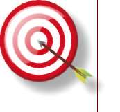
HEDEFLER, HEDEF ve DAVRANIŞLAR,
ÖĞRENME - ÖĞRETME STRATEJİLERİ, DEĞERLENDİRME STRATEJİLERİ
B. EĞİTİCİ EĞİTİMİ KURSU
B.1. HEDEFLER
1- Tüm atış tekniklerini hızlı ve etkili uygulama, 2- Seçilen bir tekniği öğretim ilkelerine uygun anlatma 3- Verilen örnek uygulama için en uygun atış tekniklerini seçme ve uygulama 4- Grubu sevk ve idare etme,
B.2. HEDEF ve DAVRANIŞLAR
1.Tüm atış tekniklerini hızlı ve etkili uygulama, 1.1. Teknikleri demo olarak gösterme,
1.2. İstenilen oranda isabetli atış yapma, 2. Seçilen bir tekniği öğretim ilkelerine uygun anlatma 2.1. Belirli bir Tekniği teorik ve uygulamalı olarak anlatma, 2.2. Belli bir tekniği adım adım uygulamalı olarak gösterme, 2.3. Uygulama esnasında güvenlik tedbirlerini alma.
3. Verilen örnek uygulama için en uygun atış tekniklerini seçme ve uygulama 3.1. Seçilen tekniği kurallarına göre uygulama, 3.2. Verilen sürede doğru hedefi vurma,
3.3. Güvenli atış yapma
4. Grubu sevk ve idare etme,
4.1. Değişen şartlara ve ortama göre ders programında gerekli değişiklik yapma,
4.2. Eğitim alanında gerekli atış istasyonları ve barikat parkurlarını hazırlama, 4.3. Bina operasyon uygulamaları için değişik senaryo geliştirme, 4.4. Ölçme ve değerlendirme işlemini gerçekleştirme.
B.3. EĞİTİCİ YETİŞTİRME KURSU BELİRTKE TABLOSU
• O
HEDEF DAVRANIŞLAR
KONULAR
1.BÖLÜM OPERASYONEL ATIŞ
X
X
X
TEKNİKLERİ
2. BÖLÜM TAKTİK MÜDAHALE
X
X
X
X
TEKNİKLERİ VE OPERASYON

B.4. KURS PLANI
S.NO.
KONULAR
EĞİTİCİ YETİŞ
TİRME KURSU
(DERS SAATİ)
1
Yarı Otomatik Tabanca İle Temel Atış Teknikleri x
2
Tam Otomatik Tabanca İle Temel Atış Teknikleri x
3
Tabanca Kurma Ve Hızlı Atış Pozisyonuna Geçme Teknikleri 5
4
Tabanca İle Öne Doğru Atış Tekniği
3
5
Tabanca İle Şarjör Değiştirme Ve Çökerek Atış Tekniği 2
6
Tabanca İle Dönerek Atış Teknikleri
6
7
Tabanca İle Yürüyerek (Hareket Halinde) Atış Tekniği 4
8
Tabanca İle Koşarak Atış Tekniği
4
9
Sivil Kıyafetlerden Tabanca İle Atış Teknikleri 3
10
Tabanca İle İstasyon Çalışmaları
4
11
Tabanca İle Eforlu Barikat Testi
4
12
Tam Otomatik Tabanca Kurma Ve Hızlı Atış Pozisyonuna Geç4
me Teknikleri
13
Tam Otomatik Tabanca İle Öne Doğru Atış Tekniği 3
14
Tam Otomatik Tabanca İle Şarjör Değiştirme Ve Çökerek Atış
2
Tekniği
15
Tam Otomatik Tabanca İle Dönerek Atış Teknikleri 4
16
Tam Otomatik Tabanca İle Yürüyerek (Hareket Halinde) Atış
4
Tekniği
17
Tam Otomatik Tabanca İle Koşarak Atış Tekniği 4
18
Silah Değiştirerek Atış Teknikleri
2
19
Tam Otomatik Tabanca İle İstasyon Çalışmaları 4
20
Tam Otomatik Tabanca İle Eforlu Barikat Testi 4
21
Kapalı Ve Açık Alanlarda Operasyon Planlama 4
22
Kapalı Alana Yaklaşma Ve Giriş Teknikleri
6
23
Kapalı Alan Çalışmaları (Kapı, Merdiven, Koridor) 6
24
Kapalı Alanda Atışlı Operasyon Uygulamaları 6
25
Yarı Otomatik Tabanca İle Kapalı Alanda Atışlı Operasyon Uy6
gulamaları
26
Tam Otomatik Tabanca İle Kapalı Alanda Atışlı Operasyon 6
Uygulamaları
27
Kapalı ve Açık Alanda Eforlu Operasyon Testi 6
28
Taktik Eğitim Silahı ile Kapalı Alanda Operasyon Uygulamaları 6
29
Taktik Eğitim Silahı İle Canlı Hedefe Yönelik Senaryolu Operas8
yon Uygulamaları (Gece Ve Gündüz)
120
HEDEFLER, HEDEF ve DAVRANIŞLAR,
ÖĞRENME - ÖĞRETME STRATEJİLERİ, DEĞERLENDİRME STRATEJİLERİ
T
B.5. ÖĞRENME - ÖĞRETME STRATEJİLERİ
1. Eğitim hakkında genel bilgilendirme yapılması, 2. Eğitimde uyulması gereken güvenlik kurlarının açıklanması, 3. Eğitimde kullanılacak araç-gereç ve malzemelerin tanıtılması, 4. Teorik derslerde sunu ve örnek çalışmalar içeren video görüntülerinden yararlanılması,
5. Derse başlamadan önce vücudun eğitime hazır hale getirilmesi için günlük ısınma hareketlerinin yaptırılması, 6. Her bir tekniğin mermi kullanmadan uygulamalı olarak kursiyerlere anlatılması ve tekniğin hedefe atış yapılarak gösterilmesi, 7. Kursiyerler tarafından tekniğin tam uygulandığı kanaati hâsıl olan kadar çalışmaya devam edilmesi,
8. Kuru çalışma yeteri kadar yaptırıldıktan sonra fişek kullanılarak hedeflere atış yaptırılması, 9. Hedefe isabet durumuna göre bir sonraki derse geçilmesi, 1 0 . Öğrenilen tekniklerin istasyon çalışması ile pekiştirilmesi, 1 1 . Seçilen bir eğiticiye tekniğin tekrar anlattırılması, 1 2 . Anlatılan tüm teknikler ve istasyon çalışmalarını içerecek şekilde hazırlanmış parkurda her bir kursiyerin, bir eğitici nezaretinde zamana karşı teste tabi tutulması,
1 3 . Her bir kursiyerin, tabi tutulduğu testten değerlendirilmesi 14. Bina operasyonlarında asayiş polisine uygun değişik senaryolar tasar-lattırılması ve bu senaryonun uygulattırılması, 15. Her bir aday kursiyere, sırasıyla grup sorumluluğu vererek grubu yönettirme.
B.6. PERFORMANS DEĞERLENDİRME STRATEJİLERİ
Her bir sınav eğitim sırasında o ana kadar öğrenilen teknikleri kapsar.
Birinci haftanın sonunda yapılan sınav; Y arı Otomatik Tabanca İle Eforlu Barikat Sınavı
.a) Yarı otomatik tabanca kullanılır.
b) Parkur uzunluğu 85 metredir.
c) 25 adet fişek kullanılır.
d) Hedefte en az 23 isabetli vuruş olması gerekir. 23’den az isabet olduğu durumlarda süreye bakılmaksızın kursiyer başarısız sayılır.
e) Parkur 52 saniyede tamamlanır 52 saniye veya daha aşağı olan kursiyerler başarılı, 52 saniyeden daha yukarı olan kursiyerler başarısız sayılır.
İkinci haftanın sonunda yapılan sınav;
Tam Otomatik Tabanca İle Eforlu Barikat Sınavı a) Tam otomatik tabanca kullanılır.
b) Parkur uzunluğu 85 metredir.
c) 25 adet fişek kullanılır.
d) Hedefte en az 23 isabetli vuruş olması gerekir. 23’den az isabet olduğu durumlarda süreye bakılmaksızın kursiyer başarısız sayılır.
e) Parkur 52 saniyede tamamlanır 52 saniye veya daha aşağı olan kursiyerler başarılı, 52 saniyeden daha yukarı olan kursiyerler başarısız sayılır.
Üçüncü haftanın sonunda yapılan sınav;
Eforlu Bina Sınavı
Bu sınav iki bölümden oluşur. Her iki bölümden alınan puanların ortalaması alınır ve bir sınav sonucu olarak değerlendirmeye tabi tutulur.
1- Yarı Otomatik Tabanca İle Eforlu Bina Testi a) Yarı otomatik tabanca kullanılır.
b) Koşu pist uzunluğu 400 metredir.
c) Bina içinde 7 adet hedef bulunur.
d) 21 adet fişek kullanılır.
e) Tamamlama süresi koşu pisti ve bina içi çalışma dâhil toplam 130
saniyedir.
f) Her bir hedefe 3 fişek atılır.
g) Her bir hedefe en az bir fişek isabet ettirilir, toplam isabetli vuruş sayısı en az 18 olmalıdır. Aksi halde sürelere bakılmaksızın kursiyer başarısız olur.
h) Rehine veya elinde silah olmayan hedeflerin vurulması durumunda bu hedeflere isabet eden her fişek için 5 saniye ceza verilir ve toplam süreye ilave edilir.
i) Eğitici değerlendirmesi kursiyerin bina içerisindeki hızı, tekniği uygulayış
şekli ve estetiği dikkate alınarak yapılır. Kursiyerin bina içerisinde verdiği refleksler, geçişlerdeki hızı, bina içinde tekniklerin uygulama başarısı göz önüne alınarak öğretim görevlisi tarafından -5’ten +5’e kadar puan verilir. Öğretim görevlilerinin verdikleri eksi (–) puanlar toplam süreye eklenir. Artı (+) puanlar toplam süreden düşülür.
k) Parkur sonunda hesaplanan süre 130 saniye veya daha aşağı olan kursiyerler başarılı, 130 saniyeden daha yukarı olan kursiyerler başarısız sayılır.
HEDEFLER, HEDEF ve DAVRANIŞLAR, ÖĞRENME - ÖĞRETME STRATEJİLERİ, DEĞERLENDİRME STRATEJİLERİ
2- Tam Otomatik Tabanca İle Eforlu Bina Testi a) Üçüncü haftanın sonunda yapılır.
b) Tam otomatik tabanca kullanılır.
c) Koşu pist uzunluğu 400 metredir.
d) Bina içinde 7 adet hedef bulunur.
e) 21 adet fişek kullanılır.
f) Tamamlama süresi koşu pisti ve bina içi çalışma dâhil toplam 130
saniyedir.
g) Her bir hedefe 3 fişek atılır.
h) Her bir hedefe en az bir fişek isabet ettirilir, toplam isabetli vuruş sayısı en az 18 olmalıdır. Aksi halde sürelere bakılmaksızın kursiyer başarısız olur.
j) Rehine veya elinde silah olmayan hedeflerin vurulması durumunda bu hedeflere isabet eden her fişek için 5 saniye ceza verilir ve toplam süreye ilave edilir.
k) Eğitici değerlendirmesi kursiyerin bina içerisindeki hızı, tekniği uygulayış
şekli ve estetiği dikkate alınarak yapılır. Kursiyerin bina içerisinde verdiği refleksler, geçişlerdeki hızı, bina içinde tekniklerin uygulama başarısı göz önüne alınarak öğretim görevlisi tarafından -5’ten +5’e kadar puan verilir. Öğretim görevlilerinin verdikleri eksi (–) puanlar toplam süreye eklenir. Artı (+) puanlar toplam süreden düşülür.
l) Parkur sonunda hesaplanan süre 130 saniye veya daha aşağı olan kursiyerler başarılı, 130 saniyeden daha yukarı olan kursiyerler başarısız sayılır.

GÜVENLİK ÖNLEMLERİ
1. Eğitim alanının atışlı eğitimlere uygun olduğunun kontrol edilmesi ve eğitime hazır hale getirilmesi,
2. Eğitim alanında bir ambulans, bir doktor ve bir hemşirenin hazır bulundurulması, 3. Eğitim alanına ilgisiz kişilerin girmesine izin verilmemesi, 4. Eğitici ve kursiyerlere, tüm uygulamalarda çelik yelek, kask ve gözlük giydirilmesi,
5. Güvenlik kurallarını içeren yazılı belgenin hazırlanması, 6. Eğitim başlamadan önce ilk olarak güvenlik kuralları, yüksek sesle katılımcılara okunması ve tebliğ edilmesi, 7. Eğitim süresince her gün ders başlamadan önce kursiyerlerin silahlarının şarjörlerinin ve üzerlerinin kontrol edilmesi, silah-şarjörlerin boş
olduğundan, üzerlerinde fişek bulunmadığından emin olunmalı, 8. Verilen her moladan sonra 4.maddedeki kontrollerin tekrar edilmesi, 9. Her bir hareketin komutla yaptırılması, 1 0 . Çalışma esnasında yere düşen malzemenin izin verilmeden alınmamasına müsaade edilmemesi, 1 1 . Kullanılan silahların hiçbir suretle canlı hedefe doğrultturulmaması, 1 2 . Çalışma haricindeki zamanlarda silahtan şarjör çıkartılmış ve mekanizma geriye kitlenmiş durumda kılıfta taşıttırılması, 13. Güvenlik tedbirlerine herkesin azami derece de uymasının sağlanması, 2 1
HEDEFLER, HEDEF ve DAVRANIŞLAR, ÖĞRENME - ÖĞRETME STRATEJİLERİ, DEĞERLENDİRME STRATEJİLERİ
G KULLANILACAK ARAÇ-GEREÇ VE MALZEMELER
S.NO
ARAÇ-GEREÇ-MALZEME ADI
MİKTARI
1
Yarı Otomatik Tabanca
Kursiyer Sayısınca
2
MP5 Makinalı Tabanca
“
3
Yarı Otomatik Tabanca Şarjörü
Kursiyer Sayısı X 2
4
MP5 Makinalı Tabanca Şarjörü
“
5
MP5 Makinalı Tabanca Askı Kayışı
Kursiyer Sayısınca
9x19 mm Fişek (Asgari
Temel Eğitim
350
6
Bir Kursiyer İçin)
Eğitici Yetiştirme
1000
7
Taktik Eğitim Tabancası
Kursiyer Sayısınca
8
Taktik Eğitim Tabanca Şarjörü
Kursiyer Sayısı X 2
9
Tak. Eğt Tab. Fişeği (Bir Kursiyer İçin)
Yeteri Kadar
10
Taktik Eğitim Binası
1 Adet
11
Çelik Yelek
Kursiyer Sayısınca
12
Kask
“
13
Atış Gözlüğü
"
14
Silah Temizleme Seti
5 Adet
15
Hedef Tahtası
100 Adet
16
Hedef Ayağı
20 Adet
17
Hedef Kağıdı
200 Adet
18
Bant
10 Adet
19
Zımba Makinası
4 Adet
20
Zımba Teli
5 Kutu
21
Barikat
12 Adet
22
Projektör
3 Adet
23
El Feneri
5 Adet
24
Flip Chart
2 Adet
25
Eğitim Sınıfı
1 Adet
26
Projeksiyon
1 Adet
27
Bilgisayar
1 Adet
28
Flip Chart Kalemi
5 Adet
29
Flip Chart Silgisi
5 Adet
EĞİTİM ALANININ ÖZELLİKLERİ
1- Asgari; 50 metre genişliğinde 100 metre uzunluğunda, 5 metre yüksekliğinde yan koruma duvarları, 7 metre yüksekliğinde kapan yüksekliği ve gece uygulamaları için ışıklandırma sistemi olan açık alan, 2- Ders arası molalarda kursiyerlerin istirahat edebileceği açık veya kapalı alan,
3- Kursiyerlerin zaruri ihtiyaçlarını giderebileceği “Kafeterya, WC., Lavabo vb..” gibi kapalı alan,
4- Kontrol atış kulesi olmalıdır.
5- Zemin, fişeği sektirmeyecek toprak, kum veya çim olabilir.
BAŞVURU KAYNAKLARI
1- Amerika ATAP Kursu Eğitim Ders Notları
2- Rehine Kurtarma Eğitim Kursu Ders Notları 23
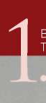
TIŞ TEKNİKLERİ
BÖLÜM
B- İLERİ SEVİY E ATIŞ TEKNİKLERİ
BÖLÜM
TEMEL ATIŞ TEKNİKLERİ
1. BÖLÜM: OPERASYONEL ATIŞ TEKNİKLERİ
I- TEMEL ATIŞ TEKNİKLERİ
GİRİŞ
Temel atış teknikleri, atıcı ve silahın ilk buluşması ile başlayıp atıcının yetiştirilme amacına göre (askeri-polisiye-sivil) belirtilen hedef doğrultusundaki, öğretilen tüm teknik ve yöntemlerin son bulmasına kadar geçen süreci kapsar.
Temel atış tekniklerinin kapsamında, atıcının silahı tanıması, atış yaparken silahın patlamasıyla verdiği tepkiye göre kendini tanıması, atışlarındaki başarı-başarısızlık durumuna göre kendini değerlendirmesi, iç ve dış balistikle ilgili temel kuralları öğrenmesi vardır.
Temel atış teknikleri ileri seviye atış tekniklerinin alt yapısı durumunda olup ileri seviye atış yöntemlerinin olmazsa olmazıdır. Bu süreçte bilgi ve uygulama bakımından verilecek doğru bilgiler, kursiyerler için hayati önem taşımaktadır.
Atış e ğitmenlerinin genelde eğiticilik yaparken karşılaştıkları başlıca zorluk, daha evvelden öğrenilen yanlış alışkanlıkların düzeltilmesidir. Bu nedenledir ki temel atış eğitimi, atıcının tüm hayatını kapsayacak atış tekniklerinin öğre-nilmesi ve bunların uygulamalı eğitimlerinin yapılması bakımından da oldukça önem arz etmektedir.
Taktik bir müdahalede kullanılan ileri bir atış tekniğinin başarılı olmasından en basit bir poligon güvenlik kuralının ihlaline kadar, temel atış tekniğinin bilinçaltına refleks olarak programlanmış yansımaları görülebilir. Örneğin farklı ülkelerden eğitim merkezinde bir araya gelmiş ve orada aynı taktik müdahale eğitimini alan kursiyerlerin, ileri seviye ya da operasyonel atış tekniklerini kullanırken, tekniği uygulama bakımından hareketlerinde bariz farklılıklar gözlenebilmektedir.
Temel atış teknikleri doğru olarak verildiği takdirde bunun olumlu yansımaları ileride öğrenilecek ileri düzey atış teknikleri eğitimlerinde de görülecektir. Aynı şekilde temel atış teknikleri eğitiminde kişiye öğretilen yanlış bir bilgi de ileride ileri düzey atış eğitimlerinde kişinin karşısına bir problem olarak çıkacaktır ve bu problemin düzeltilmesi başlangıçtaki noktaya göre uzun zaman alacaktır.
Bazı kaynaklar incelendiğinde, temel atış eğitiminin başlangıç noktası olarak atıcının silah, poligon ve eğitici ile buluşması olarak belirlenmişse de temel atış tekniği eğitiminin başlangıcının, atıcı ile silahın buluşma noktası olarak ele alınması daha doğru olacaktır. Temel atış teknikleri, taktiksel anlamda silahla ilgili sorunları çözerken tek başına yeterli olmayabilir, bu tür sorunlar temel atış eğitimi ile elde edilen kazanımlarla çözülmeye çalışıldığında ciddi kayıplara yol açabilir. Alanda çalışan personelin, çalışma koşulları ve amacına göre farklı atış tekniklerini kullanmaları doğaldır. Hizmet öncesi eğitim kurumlarında verilen temel atış tekniklerinin, görev başında karşılaşılan farklı durumlara cevap veremeyeceği açıktır.
Temel atış tekniklerini, özet olarak, “silaha intibak dönemi” olarak tanımlayabiliriz. Temel atış teknikleri eğitimini almış bir kullanıcıyı tam anlamıyla silah kullanmaya ehil bir kişi olarak betimleyebilmemiz için bu kişinin temel atış tekniğinin bir üst basamağı olan ileri seviye atış eğitimini de alması gerekmektedir.
^ Katılımcıların “Temel Atış Teknikleri” dendiğinde ne anladıklarını anlamaya çalışın.
^ “Temel Atış Teknikleri”nin önemli noktaları üzerinde durun.
^ “Temel Atış Teknikleri”nde sık yapılan hatalar üzerinde durun.
A. YARI OTOMATİK TABANCA İLE TEMEL ATIŞ EKNİKLERİ
Temel Prensipler
a) Duruş
b) Tutuş (kabza kavrama)
c) Nişan alma
d) Nefes kontrolü
e) Tetik çekme
a) DURUŞ
Doğru bir duruş, iyi bir atışın temelini oluşturur. Bu açıdan atış esnasında doğru duruş, bir boksörün duruşuyla (gardını almasıyla) benzerlik göstermektedir. Tabanca ile atış yaparken vücudun alacağı biçim şu şekilde olmalıdır: 1. Ayaklar omuz genişliğinde açık olmalı, ayakucu hedefi gösterir şekilde durmalı ve destek alınan ayak, üzerinde durulan ayağın hafifçe önünde olmalıdır.
2. Dizler hafifçe kırılmalıdır (esnek tutulmalıdır) 3. Ağırlık, ayaklar arasında dengeli dağılmalı, ayaklar zeminde yatay pozisyonda durmalı yani ayak tabanı zemine tam basmalıdır.
4. Göğüs, belden öne doğru hafifçe eğilmelidir.
5. Her iki kol hedefe doğru yönelmiş vaziyette, mümkün olduğunca ileri doğru açılmış ve düz durumda tutulmalıdır.
6. Baş dik durumda ve hedefe dönük olmalıdır. (Bakınız Resim-1.a) 26

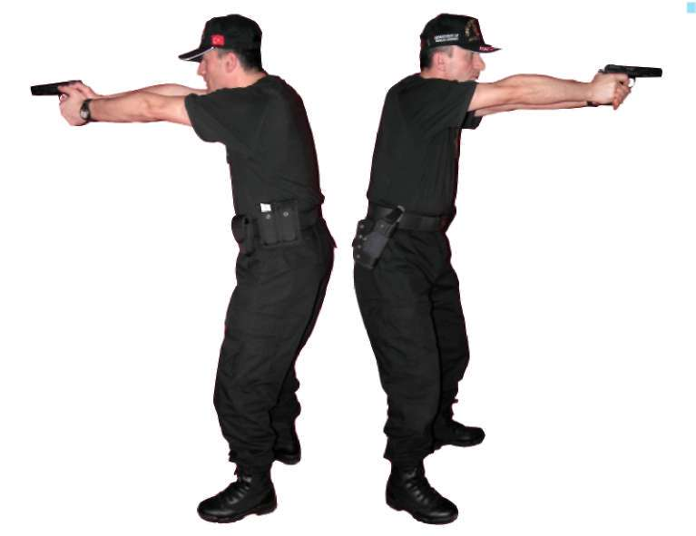
BÖLÜM
TEMEL ATIŞ TEKNİKLERİ
Resim 1.a) Duruş (Yarı Otomatik Tabanca)
b) TUTUŞ (KABZA KAVRAMA)
Tabancanın doğru tutulması ve kabzanın kavranması aşağıdaki gibidir: 1. Atış yapan elin baş ve işaret parmakları bir “V” oluşturmalıdır.
2. Tetiği çekecek parmak, silahın gövdesinde, sürgüye paralel durumda bulunmalıdır. Başparmak, gövdenin diğer tarafında ve yine sürgüye paralel durumda olmalıdır. Diğer üç parmak, kabzanın ön tarafında, tetik çemberinin altını tutuyor olmalıdır.
3. Destek veren elin arka kısmı, silah kabzasının boşta kalan kısmını dolduracak şekilde yerleştirilmelidir. Bu şekilde, 360 derecelik bir kavrama sağlanmaktadır.
4. Destek veren elin başparmağı sürgüye paralel şekilde, ateş eden elin baş-parmağının altında durmalıdır. Destek veren elin parmakları ateş eden elin parmaklarının etrafında dolanacak şekilde tetik çemberinin altında tutulmalıdır. Tutuş esnasında, destek veren elin işaret parmağının tetik çemberinin önüne götürülmemesi çok önemlidir. (Bakınız Resim- 1.b) 27
Resim-1.b) Tutuş (Yarı Otomatik Tabanca)
c) NİŞAN ALMA
Nişan alma, göz, gez, arpacık ve hedef ilişkisini tanımlamaktadır.
Arpacık, hedefin tam ortasına yerleştirilip gezden bakıldığında, arpacığın ucu ile gezin üst kısmı aynı hizada durmalı ve tam ortasında, gezin iki tarafında da eşit boşluk olacak biçimde görülmelidir.
1. Her iki göz sürekli açık tutulmalıdır.
2. Bu esnada göz, arpacığa odaklanmalı, hedef ve hedefin arkası biraz bulanık görülmelidir. (Bakınız Resim-1.c)
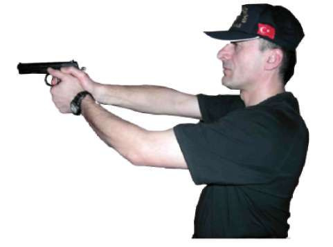
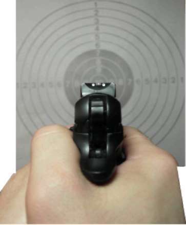
BÖLÜM
TEMEL ATIŞ TEKNİKLERİ
Resim-1.c) Nişan Alma (Yarı Otomatik Tabanca) d) NEFES KONTROLÜ
Nefes kontrolü, atıcılığın temel prensiplerindendir. Bu prensip, atıcı stresli olmadığında ya da zaman sıkıntısı çekmediğinde uygulanır. Çatışma ve yakın mücadele durumlarında hem stres hem de zaman sıkıntısı mevcut olduğu için nefes kontrolü uygulaması yapılamaz.(Bakınız Resim-1.d) Resim-1.d) Nefes Kontrolü (Yarı Otomatik Tabanca) e) TETİK ÇEKME
Tetik çekme, temel atış teknikleri arasında önemli unsurlardan birisidir. Tetiği doğru çekme, tetiğe yapılan baskıyı artırarak sürpriz bir ateşleme olmasını sağlamaktır. Tetik, tetiği çekecek parmağın ucuyla ilk boğumu arasının tetiği kavramasıyla çekilmelidir. Silahın hedefe yönelik olduğu tüm zamanlarda parmak tetikle temas hâlinde olmalıdır. (Peş peşe atışlar arasında parmak tetiğe vurmamalıdır; parmak, tetikle beraber hareket etmelidir) (Bakınız Resim-1.e) 29
Resim-1.e) Tetik Çekme (Yarı Otomatik Tabanca) Temel Atış Tekniği Çalışma Prensipleri
^ Emniyet tedbirlerini okuyun, atış poligonunda atış emniyeti ile ilgili gerekli önlemleri alın.
^ Eğitime katılan herkesin vücudunu, basit ısınma teknikleri ile ısındırarak çalışmaya hazırlayın, silah ve şarjörleri kontrol edip koruyucu malzemeleri giyin ve giydirin.
^ Temel atış tekniği ile ilgili atışlı çalışma yapmadan önce tekniğin tamamını kapsayacak atışsız pratik çalışma yaptırın.
^ Poligonun büyüklüğüne göre bu tekniği çalışmak için yerleştireceğiniz daireli hedef sayısını ve çalışma yaptıracağınız personel sayısını belirleyin.
^ Tekniği çalışmaya, önce 5 metre mesafeden başlayın ve daha sonra mesafeyi 10-15-20-25 metreye çıkararak çalışmayı devam ettirin.
^ Atış yapacak personele, tek şarjöre 10 adet fişek doldurtup, şarjörü tabancalarına taktırın. Hedefin 5 metre mesafede karşısına geçirip atış
pozisyonu aldırın ve yukarıdaki temel atış prensiplerini uygulatarak hedefe tek, tek atış yaptırın.
^ Atış yapan personelin vuruşlarının tamamının, hedefin siyah kısmında olmasına dikkat edin ve belirtilen bir üst mesafeye çıkararak atış yaptırmaya devam edin.
^ 25 metre mesafedeki vuruşların tamamının, hedefin siyah kısmında olması, başarılı şekilde yapılmış bir atışın göstergesidir.
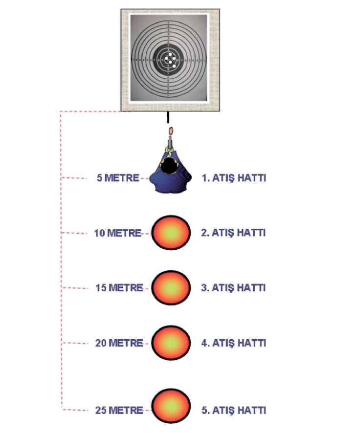
BÖLÜM
TEMEL ATIŞ TEKNİKLERİ
^ Yukarıda uygulanan tekniği, eğitime katılan personel başına tahsis edilen mühimmat miktarı yeterli ise tekrar yaptırın.
^ Tamamlanan her çalışmadan sonra, atış yapan tüm personele şarjörlerini çıkarttırın. Silahların fişek yatağını gözle ve elle kontrol ettirin. Güvenli bir bölgede tetik düşürttürdükten sonra şarjörler ve silahları kılıflarına taktırın. (Bakınız Şekil-1)
Yarı otomatik tabanca ile temel atış teknikleri, yarı otomatik tabanca ileri seviye atış tekniklerinin alt yapısını oluşturur Şekil-1) Temel Atış Teknikleri İstasyonu (Yarı Otomatik Tabanca) 3 1
B. MP5 MAKİNALI TABANCA İLE TEMEL ATIŞ TEKNİKLERİ
Temel Prensipler
a) Duruş
b) Tutuş
c) Nişan Alma
d) Nefes Kontrolü
e) Tetik Çekme
a) DURUŞ
MP5 makinalı tabanca ile atış öncesinde duruş, otomatik tabancada benzetme yaptığımız boksörün duruşuna (gardını alışına) benzer. Duruş, şöyle olmalıdır:
1. Ayaklar omuz genişliğinde açık olmalı, ayakucu hedefi gösterir şekilde durmalı ve destek alınan ayak, üzerinde durulan ayağın hafifçe önünde olmalıdır.
2. Dizler hafifçe kırılmalıdır (esnek tutulmalı).
3. Ağırlık, ayaklar arasında dengeli dağılmalı; ayaklar, zeminde yatay pozisyonda durmalıdır.
4. Göğüs, belden öne doğru hafifçe eğilmelidir (Öne eğilme, silahın geri tepmesini kontrol için çok önemlidir.)
5. Her iki kol, mümkün olduğunca silaha yapışık ve vücuda doğru kırık durumda tutulmalıdır.
6. Baş dik durumda ve hedefe dönük olmalıdır. (Bakınız Resim-2.a)
^ Katılımcılara yapacağınız dersin konusunu teşkil eden MP5 makinalı tabancanın kullanım alanları ve taktik operasyonlardaki diğer silahlara göre öne çıkan avantajlarını anlatın
^ Katılımcılara da konu ile ilgili söz hakkı tanıyın varsa yaşanmış olayları anlatmalarını sağlayın.
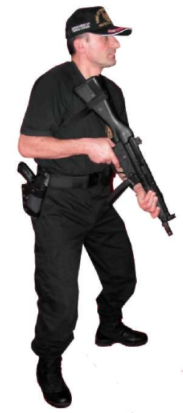
BÖLÜM
TEMEL ATIŞ TEKNİKLERİ
Resim-2.a) Duruş (MP5 Makinalı Tabanca)
b) TUTUŞ (KABZA KAVRAMA)
MP5 makinalı tabancayı tutuş, aşağıdaki gibi olmalıdır 1. Ateş eden el, silahın kabza bölümünden; diğer el, silahın el kundağından tutmalıdır.
2. Silahın dipçiği, omuz boşluğuna yerleştirilerek elmacık kemiği ile kaynak yapılmalı yani elmacık kemiği silahın dipçiğine temas eder bir konumda olmalıdır.
3. Atış yaparken silah, omza biraz baskı yapılarak iki elle tutulmalıdır. (Bakınız Resim-2.b) 33
Resim-2.b) Tutuş/Kabza Kavrama (MP5 Makinalı Tabanca) c) NİŞAN ALMA
Nişan alma, göz, gez, arpacık ve hedef ilişkisini tanımlamaktadır. Arpacık, hedefin tam ortasına yerleştirilip gezden bakıldığında, arpacığın içinde bulunduğu yuvarlak daire, gezin yuvarlak dairesinin içine eşit gelecek şekilde yerleştirilerek arpacık bu dairenin tam ortasından görülmelidir.
1. Her iki göz sürekli açık tutulmalıdır.
2. Atış yaparken göz arpacığa odaklanmalı, hedef ve hedefin arkası biraz bulanık görülmelidir. (Bakınız Resim-2.c)
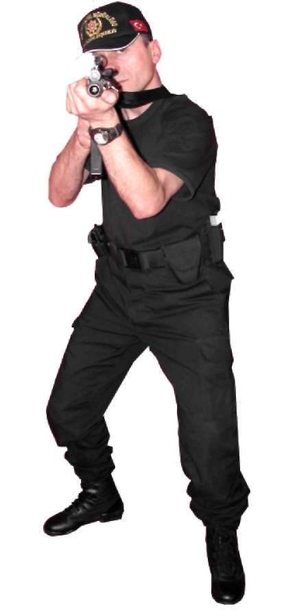
BÖLÜM
TEMEL ATIŞ TEKNİKLERİ
Resim-2.c) Nişan Alma (MP5 Makinalı Tabanca) d) NEFES KONTROLÜ
Ya k ın mesafe atışlarında nefes kontrolü söz konusu değildir. Ancak uzak mesafe atışlarında hedefe isabet zorlaştığı için nefes kontrolü yapılmalıdır. Tetik kontrolü ve nişangâh ayarının yapılması, doğal soluk aralıklarıyla olmalıdır.
e) TETİK ÇEKME
Tetik çekme, temel atış teknikleri arasında önemli unsurlardan birisidir.
Düzgün bir şekilde tetiği çekme, tetiğe baskıyı düzenli olarak artırarak, sürpriz bir ateşleme ile olur. Tetik, tetik parmağının ucu ve ilk eklemi arasındaki bölgede bulunmalıdır. Silah, hedefe doğru tutulurken, tetik parmağının sürekli olarak tetikle kontak hâlinde olması gerekir. (Atışlar arasında tetiği boş bırakmamak gerekir.) (Bakınız Resim-2.d) 35
Resim-2.d) Tetik Çekme (MP5 Makinalı Tabanca) Tekniği Uygulamalı Olarak Çalışma Şekli
^ Emniyet tedbirlerini okuyun. Atış poligonunda atış emniyeti ile ilgili gerekli önlemleri alın.
^ Eğitime katılan herkesin vücudunu, basit ısınma teknikleri ile ısındırarak çalışmaya hazırlayın. Silah ve şarjörleri kontrol edip koruyucu malzemeleri giyin ve giydirin.
^ Teknik ile ilgili atışlı çalışma yapmadan önce tekniğin tamamını kapsayacak atışsız pratik çalışma yaptırın.
^ Poligonun büyüklüğüne göre bu tekniği çalışmak için yerleştireceğiniz daireli hedef sayısını ve çalışma yaptıracağınız personel sayısını belirleyin.
^ Tekniği çalışmaya, önce 5 metre mesafeden başlayın. Daha sonra mesafeyi 10-15-20-25 metreye çıkararak çalışmayı devam ettirin.
^ Atış yapacak personele, tek şarjöre 10 adet fişek doldurtup, şarjörü tabancalarına taktırın, hedefin 5 metre mesafede karşısına geçirip atış
pozisyonu aldırın ve yukarıdaki temel atış prensiplerini uygulatarak hedefe tek tek atış yaptırın.
^ Atış yapan personelin vuruşlarının tamamının hedefin siyah kısmında olmasına dikkat edin ve bir üst mesafeye çıkararak atış yaptırmaya devam edin.
^ 25 metre mesafedeki vuruşların tamamının, hedefin siyah kısmında olması başarılı şekilde yapılmış bir atışın göstergesidir.
BÖLÜM
TEMEL ATIŞ TEKNİKLERİ
^ Yukarıda uygulanan tekniği, eğitime katılan personel başına tahsis edilen mühimmat miktarı yeterli ise tekrar yaptırın.
^ Tamamlanan her çalışmadan sonra atış yapan tüm personele şarjörlerini çıkarttırın. Silahların mekanizmalarını geri çektirip fişek yataklarını gözle ve elle kontrol ettirin. Mekanizmayı yerine getirterek güvenli bir bölgede tetik düşürtün. Daha sonra mekanizmayı tekrar kurulu pozisyona getirterek silahları emniyete aldırın. (Bakınız Şekil-2)
MP5 makinalı tabanca ile temel atış teknikleri, MP5 makinalı tabanca ileri seviye atış tekniklerinin alt yapısını oluşturur 25 METR& -1 J 5. ATIŞ HATTI
Şekil -2) Temel Atış Teknikleri İstasyonu (MP5 Makinalı Tabanca) 37
2İL .B
2. Bİ LÖELRÜİ MSEVİYE ATIŞ TEKN
1. YİAK
RI L
OTE
O R
MATİİ
K TABANCA
İLE ATIŞ TEKNİKLERİ
2. MP5 MAKİNALI TABANCA


BÖLÜM
İLERİ SEVİYE ATIŞ TEKNİKLERİ
2. BÖLÜM: İLERİ SEVİYE ATIŞ TEKNİKLERİ
27 ders saati
^ Katılımcılara ileri seviye atış tekniklerinden ne anladıklarını sorun.
^ Katılımcılara beklentilerinin neler olduğunu sorun.
Konunun takdimini yaparak, amaç ve hedeflerini vurgulayın.
Planınız doğrultusunda dersin amaç ve hedefleri ile dersi işleyiş metodunuzu anlatın.
GİRİŞ
İleri seviye atış teknikleri –belli bir amaca yönelik olarak– temel atış becerilerinin geliştirilmesinden sonra başlayan atış eğitimidir. İleri seviye atış
teknikleri, temel atış teknikleri ile yakalanan seviyenin ilerisi hedeflendiği için bu isimle anılmaktadır.
Taktik müdahaleler için ileri seviyede silah kullanma eğitiminin alınmış olması, yapılacak müdahalelerin başarılı olmasını doğrudan etkileyen faktörlerdendir. Alınan bu eğitimin kalitesi, süreci, amacına uygun olması, eğitilen hedef kitlenin yerinde seçimi, taktik müdahalelerde (silahlı müdahalelerde) başarıyı doğrudan etkiler.
İleri seviye atış teknikleri farklı adlandırmalarla da ifade edilmektedir: Operasyonel atış teknikleri, taktik atış, operasyonel silah kullanma taktikleri gibi.
Bu farklılıklar ilgili birimlerin terminolojisi ile ilgilidir.
Şehir operasyonlarında yarı otomatik ve makinalı tabancalar sıklıkla kullanılır.
Batı orijinli kaynaklar incelendiğinde, sokakta devriye gezen polisin yaptığı işin de operasyonel bir faaliyet olarak değerlendirildiği görülmektedir.
Operasyonel atış teknikleri adlandırmasındaki “operasyon” planlı müdahale edilmesini gerektiren olayları kapsadığı gibi sokakta devriye gezen güvenlik kuvvetlerinin acil durumlarda silah kullanma zorunda kalmasını da kapsar.
Batı temelli kaynaklar sokakta devriye gezen polisin yaptığı işi de operasyonel bir faaliyet olarak nitelendirmektedir.
İleri seviye atış tekniklerinin de temel kuralları vardır: Duruş, tutuş, nefes kontrolü, kabza kavrama, tetik çekme, hızlı nişan alma, hızlı dönüş gibi.
İleri seviye atış tekniği dendiği zaman akla gelen başlıca yöntemler şunlardır: Zamanlı (süreli) atışlar, eforlu atışlar, hareketli atışlar (hedef/atıcı), düşük ışık ortam atışları, istenmedik durumlarda yapılan atışlar (şarjör değiştirme ve tutukluk yapma), parkur atışları ve fiziki ortam atışları (koridor, kapı, pencere vs.) gibi. Bu teknikleri, keskin nişancı tüfeği veya şeritli makinalı tüfeklerle uygulamak doğru bir yaklaşım olmaz. İleri seviye atış eğitiminin sınırı, yapılacak görevin niteliğine göre değişebilmektedir.
İleri seviye atış teknikleri eğitimleri kapalı poligonlarda olabileceği gibi açık poligonlarda veya uygun açık alanlarda da düzenlenebilir.
Operasyonel birimin, silahlı taktik müdahalelerdeki başarısı ve etkinliği operasyonel birimde görev yapan personelin atış tekniği becerisi ile doğru orantılıdır.
Gelişmiş ülkelerin eğitim programlarını incelediğimizde, alanda görev yapan güvenlik kuvvetlerinin –yaptığı işe göre–, bir ileri seviye atış eğitiminden geçtiklerini, bunları periyodik hâle getirerek sürekli kendilerini yenilediklerini görmekteyiz. Eğitim kurumları ile alanda çalışan birimleri, atış eğitimine ihtiyaçla orantılı olarak farklı ele almaktadırlar. Bu durumu da yapılan işin niteliğine göre belirlemektedirler.
Operasyonel birimin, silahlı taktik müdahalelerdeki başarısı ve etkinliği operasyonel birimde görev yapan personelin atış tekniği becerisi ile doğru orantılıdır. Personelin atış tekliği becerisini geliştirmenin yolu, operasyonel birimde görev yapan personele ileri seviye atış becerisi kazandırma ile olur.
Ülkemizde, meslek öncesi eğitimlerde alınan ve genellikle, sadece duran 40


BÖLÜM
İLERİ SEVİYE ATIŞ TEKNİKLERİ
hedeflere nefes kontrolü ile yapılan atış şeklini içeren temel silah bilgisi ve atış eğitiminin, alanda (sokakta) çalışan güvenlik kuvvetlerinin karşılaştıkları yakın alan, çok sınırlı zaman, hareketli hedefler ve taktiksel anlamda yetersiz kalacağı aşikârdır. Bu eksikliği gidermek için temel atış teknikleri eğitiminin üzerine, personelimizin görev yaptığı alanların ve karşılaştıkları somut olayların özellikleri dikkate alınarak hazırlanmış ileri seviye atış teknikleri ve taktik müdahale eğitiminin tasarlanması zorunluluğu ortaya çıkmaktadır.
“Operasyonel Atış Teknikleri ve Taktik Müdahale Eğitimleri”, teşkilat personelimizi silahları ile barıştırmak, sokakta karşılaştığı olaylar karşısında silah kullanma becerisini artırmak, silahını etkin verimli ve taktiksel anlamda da kullanabilme becerisini geliştirmek amacı ile oluşturulmuştur. Bu eğitimle, personelimize silahını ne zaman, nerede ve nasıl kullanılacağı öğretilerek Polis Teşkilatı’nın silah kullanma yetkisini kamuoyunda tartışmaya açan ve imajını zedeleyen “öldürme” olaylarını ve mensuplarımızın operasyonlardaki can kayıplarını en aza indirgenmesi de sağlanacaktır.
1. YARI OTAMATİK TABANCA İLE İLERİ SEVİYE ATIŞ TEKNİKLERİ
1.1. YARI OTOMATİK TABANCAYI KURMA VE HIZLI ATIŞ TEKNİKLERİ
Açıklama
Bu tekniği iki şekilde uygulayabiliriz:
1. Göz Hizasında Kurma Tekniği
Mümkün olduğunca hızlı şekilde silah bulunduğu yerden çekilir ve yüzün yaklaşık 10 cm. önünde diğer elin baş ve işaret parmağıyla gezin olduğu üst kapaktan silah yan yatırılarak kavranır. Yan yatık vaziyette olan silahın üzerinden çift göz kullanılarak yüzeysel bir şekilde hedefe ilk nişan alınır.
Silahı bulunduğu yerden çekerken kabzayı tam kavramada genellikle sorun yaşanır. Kabzayı zayıf kavrama sorunu varsa, silahı kurma sırasında bu
sorun giderilir. Aynı anda baş ve işaret parmağıyla üst kapaktan tutan el sabit kalmalıdır. Silahı kabzadan tutan el yarım burgu yaparak ileri fırlatmayla birlikte boşa çıkan el kabza kavramadaki yerini alarak bilekler kilitlenir ve çift gözle hedefe ani oluşturulan nişanla aynı anda tetik düşürülür. Eş zamanlı olarak, sol ayak yaklaşık bir omuz genişliğinde sola doğru açılarak yarım ayak öne çıkartılır, sağ ayak topuğu sabit olmak üzere sağa çevrilir. Bacaklar normal kırık, göğüs ve baş hedefe dik tutulur. Tekniğin tamamı 1 veya 2 saniyede tamamlanır. El ve ayak pozisyonları ayarlandıktan sonra dikkat edilecek nokta, silahın hedefle buluştuğu anda doğru nişan alınmamışsa, tüm pozisyon özellikle de bilekleri kilitleme tekniği tekrar kontrol edilmelidir. (Bakınız Resim-3.a) 4 1
İLERİ SEVİYE ATIŞ TEKNİKLERİ
1. Hareket
2. Hareket
3. Hareket
Resim-3.a) Yarı Otomatik Tabancayı Göz Hizasında Kurma Tekniği 2. Bel Hizasında Kurma Tekniği
Bu teknik, daha çok göz önünde kurmada problem yaşanan silahlarda uygulanır. Baretta yarı otomatik tabanca, göz önünde kurulduğunda parmakların genelde emniyet mandalına temasından dolayı silah emniyete geçebilmektedir. Dolayısıyla bel hizasında kurma tekniği bu gibi silahlarda daha uygun olmaktadır.
Yarı otomatik tabancayı bel hizasından kurarken, aktif elimizle bulunduğu yerden kabza kavranarak çekilen silahın namlusu hedefi gösterecek biçimde, diğer elin parmaklarıyla üst kapaktan silah avuç içine sıkıştırırlır. Daha sonra kabzayı tutan el silahı ileri doğru iterken, kabza kapağını tutan el geri doğru çekilir. Kapağı tutan el kurma işlemi tamamlandıktan sonra kabzayı kavramadaki yerini alarak bilekler kilitlenir ve çift gözle hedefe ani oluşturulan nişanla aynı anda tetik düşürülür. Eş zamanlı olarak, göz önünde silah kurma tekniğinde olduğu gibi ayak pozisyonları uygulanır. Tekniğin tamamı 1
veya 2 saniyede tamamlanır. El ve ayak pozisyonları ayarlandıktan sonra dikkat edilecek husus, silahın hedefle buluştuğu anda doğru nişan alınmamışsa, tüm pozisyon özellikle de bilekleri kilitleme tekniği tekrar kontrol edilmelidir.
(Bakınız Resim-3.b)
^
42
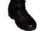
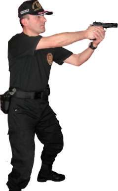
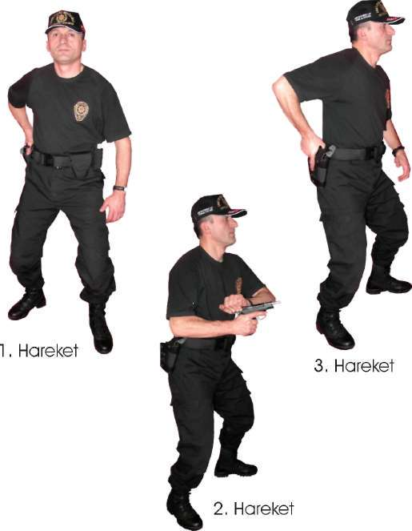
BÖLÜM
İLERİ SEVİYE ATIŞ TEKNİKLERİ
4. Hareket
Resim-3.b) Yarı Otomatik Tabancayı Bel Hizasından Kurma Tekniği Tekniği Uygulamalı Olarak Çalışma Şekli
^ Emniyet tedbirlerini okuyun, atış poligonunda atış emniyeti ile ilgili gerekli önlemleri alın.
^ Eğitime katılan herkesin vücudunu, basit ısınma teknikleri ile ısındırarak çalışmaya hazırlayın. Silah ve şarjörleri kontrol edip koruyucu malzemeleri giyin ve giydirin.
^ Teknik ile ilgili atışlı çalışma yapmadan önce tekniğin tamamını kapsayacak atışsız pratik çalışma yaptırın.
^ Silah kurma tekniklerini ayrı ayrı 5 metre mesafeden daireli hedefe doğru kuru çalışma yaptırın.
^ Silah elde hazır durumda iken, hızlı atış pozisyonuna geçme ve silah kurma teknikleri ile ilgili atışsız pratik çalışma yaptırın.
^ Silahı kılıftan çekerek hızlı atış pozisyonuna geçme ve silahı kurma teknikleri ile ilgili atışsız pratik çalışma yaptırın.
^ Silah elde hazır durumdayken hedefe doğrultup, çift gözle hızlı nişan alma tekniği ile ilgili atışsız pratik çalışma yaptırın.
^ Atışsız pratik çalışmalara yukarıda anlatılan teknikler refleks hâline ge-43

linceye kadar devam ettirin.
^ Tamamlanan her çalışmadan sonra, tüm personele şarjörlerini çıkarttırın. Silahların fişek yatağını gözle ve elle kontrol ettirin. Güvenli bir bölgede tetik düşürttürdükten sonra şarjörler ve silahları kılıflarına taktırın.
(Bakınız Şekil-3)
Silahı kurma tekniği,( atışa hazır olmayan silahı aktif duruma getirmek)hedefle ani karşılaşmalarda zaman çok önemli olduğu için etkili bir tekniktir
Yarı otomatik bir tabancanın fişek yatağına fişek sürüp silahı emniyete alarak taşımak, ani karşılaşılan hedeflerde silahın emniyetini açıp hedefe nişan oluştururken zaman kaybını en aza indirecektir.
^ Fişek yatağında fişek varken emniyete alınmadan taşınan yarı otomatik bir tabancayı taşıma esnasında ya da tabancayı bulunduğu yerden çekerken, tetiğin her hangi bir yere takılarak kontrol dışı tabancanın ateşlemesine sebebiyet verebilmektedir. Bu teknikle kontrol dışı ateşlemelerin ( patlamaların ) meydana gelmesinin önlendiği tespit edilmiştir.
^ Teknikler yeterince pratik yapılarak çalışıldığında silah kullanmayı ve ni
şan oluşturmayı hızlandırdığı gözlemlenmiştir.
Şekil --3) Yarı Otomatik Tabancayı Kurarak Atış İstasyonu 44
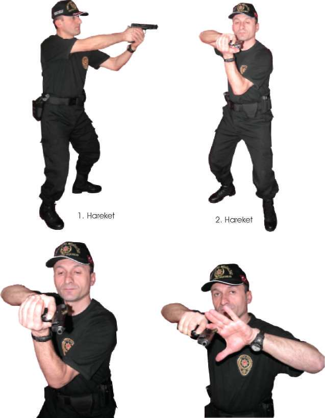
BÖLÜM
İLERİ SEVİYE ATIŞ TEKNİKLERİ
1.2. YARI OTOMATİK TABANCAYI VE MP5 MAKİNALI TABANCAYI KONTROL ETME TEKNİĞİ
Açıklama
Tamamlanan her atış tekniğinden sonra veya pozisyon değişikliklerinden önce silahı, boş kovan atacak yeri üste gelecek şekilde göğsünüze doğru toplayın. Boş kovan sıkıştırıp sıkıştırmadığını veya herhangi bir nedenle mekanizmanın yerine oturup oturmadığını gözle kontrol edin. Eğer kovan sıkışmışsa pasif el ile boş kovana vurarak mekanizmanın yerine oturtulmasını sağlayın.
Mekanizma fişeği fişek yatağına tam oturtamamışsa avuç içi ile mekanizmaya arkadan vurarak fişeğin yatağına oturmasını sağlayın. Silahın bu çabalara rağmen arızası devam ediyorsa, hızla şarjörü çıkartarak arızayı giderin. Bu teknik MP5 makinalı tabanca içinde geçerlidir. (Bakınız Resim -4.a/4.b) 4. Hareket
3. Hareket
Resim-4.a) Tutukluk Durumunda Yarı Otomatik Tabancayı Kontrol Etme Tekniği 45
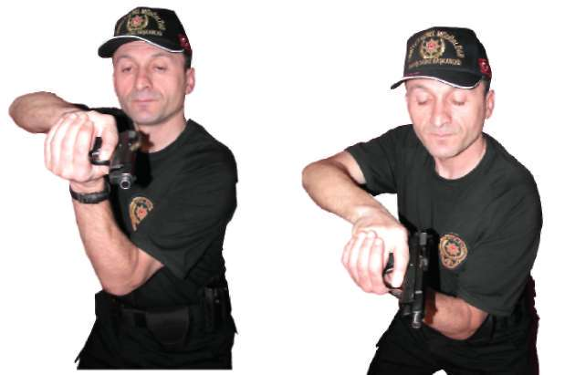

1. Hareket
2. Hareket
3. Hareket
4. Hareket
Resim-4.b) Tutukluk Durumunda Yarı Otomatik Tabancayı Kontrol Etme Tekniği
Operasyon sırasında silahın kontrolü sürekli yapılarak meydana gelebilecek olumsuzluklar anında fark edilir. Bu durum kişide refleks haline gelir.
1.3. YARI OTOMATİK TABANCA İLE SABİT POZİSYONDA DEĞİŞİK
YÖNLERDEN ÇIKAN HEDEFLERE DOĞRU DÖNÜŞ VE ATIŞ TEKNİKLERİ
1.3.1. Öndeki Hedeflere Doğru Atış Pozisyonu ve Atış Tekniği
^ Çift elle kavranan yarı otomatik dolu tabancayı göğsünüze doğru toplayın, vücudunuzun göğüs kısmı hedefe dik, bacaklar hafif kırık ve hızlı atış pozisyonunda olmalıdır. Verilen atış komutuyla birlikte tabancayı 46
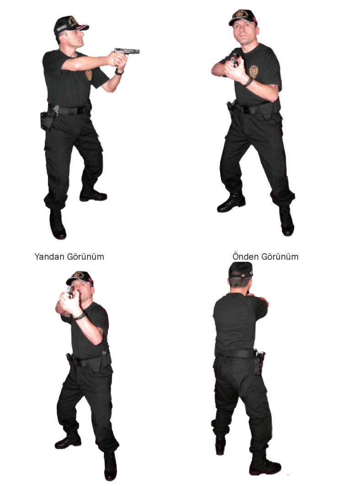
BÖLÜM
İLERİ SEVİYE ATIŞ TEKNİKLERİ
hızlı bir şekilde hedefe doğru yönelterek bir veya birden çok atış yaptıktan sonra geri toplayıp ikinci komutu bekleyin. Ayrıca bu teknik, tabanca kılıfta dolu ve boş durumdayken de uygulanabilir.
^ Komutla beraber, dolu olan tabancayı kılıftan hızlı bir şekilde çekin. Tabancayı hedefe düz bir hattan doğrultup ateş edin ve tekrar kılıfına koyun.
Eğer fişek yatağına fişek sürülmeden tabanca kılıfa konmuşsa, bu durumda silahı kurma teknikleri uygulanarak atış yapılır. (Bakınız Resim-5.a) Önden Görünüm Arkadan Görünüm
Resim-5.a) Durarak Öne Doğru Atış Teknikleri (Yarı Otomatik Tabanca) 47

1.3.2. Sağdaki Hedeflere Doğru Dönüş ve Atış Tekniği
^ Bulunduğunuz atış pozisyonundan sağ yöndeki hedef ve hedeflere dönerken, çift elle kavramış olduğunuz yarı otomatik tabancayı göğsünüze doğru toplayın. Sağ ayak topuğu sabit olmak üzere sağ ve sol ayağınızı vücudunuzla beraber sağ yöne çevirin, bozulan sol ayağı başlangıçta olduğu gibi sağ ayağın yanına alırken tabancayı göğüsten hedefe doğrultarak atış yapın. (Bakınız Resim-5.b) Resim-5.b) Durarak Yarı Otomatik Tabanca ile Sağa Dönüş ve Atış Tekniği 1.3.3. Soldaki Hedeflere Doğru Dönüş ve Atış Tekniği
^ Sağ yöne dönme tekniğinin tersi uygulanır. Çift elle kavramış olduğunuz yarı otomatik tabancayı göğsünüze doğru toplayın, sol ayak topuğu sa-48
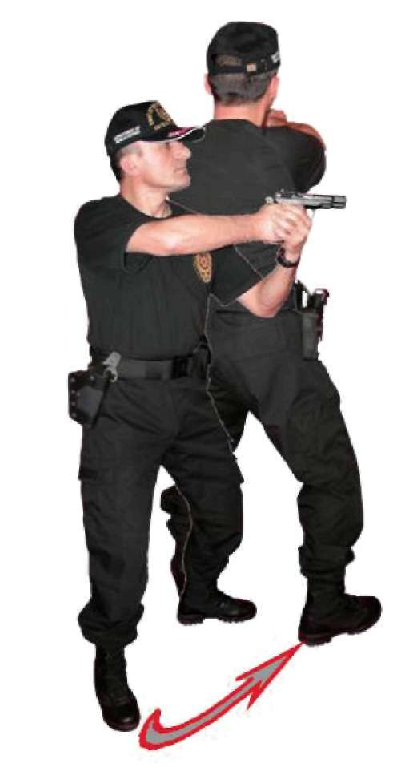
BÖLÜM
İLERİ SEVİYE ATIŞ TEKNİKLERİ
bit olmak üzere sol ve sağ ayağınızı vücudunuzla beraber sol yöne çevirin, bozulan sağ ayağı başlangıçta olduğu gibi sol ayağın yanına alırken tabancayı göğüsten hedefe doğrultarak atış yapın. (Bakınız Resim-5.c) Resim-5.c) Durarak Yarı Otomatik Tabanca ile Sola Dönüş ve Atış Tekniği 1.3.4. Gerideki Hedeflere Doğru Dönüş ve Atış Tekniği
^ Bulunduğunuz atış pozisyonundan vücudunuzu tam geriye döndürürken çift elle kavramış olduğunuz yarı otomatik tabancayı göğsünüze doğru toplayın. Dönüş yapacağınız yöndeki ayağınızın topuğu sabit olacak şekilde diğer ayağın ucuyla 180 derecelik bir dönüş yapın. Ayaklar başlangıçtaki atış pozisyonunu alırken tabancayı göğüsten hedefe doğru doğrultarak atış yapın. (Bakınız Resim:5.d) 49
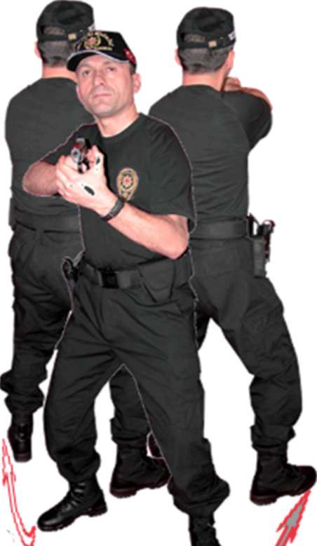
Sağdan Geriye
Soldan Geriye
Dönüş
Dönüş
Resim:5.d) Durarak Gerideki Hedefleri Doğru Yarı Otomatik Tabanca ile Dönüş ve Atış Tekniği
Tekniği Uygulamalı Olarak Çalışma Şekli
^ Emniyet tedbirlerini okuyun. Atış poligonunda atış emniyeti ile ilgili gerekli önlemleri alın.
^ Eğitime katılan herkesin vücudunu, basit ısınma teknikleri ile ısındırarak çalışmaya hazırlayın. Silah ve şarjörleri kontrol edip koruyucu malzemeleri giyin ve giydirin.
^ Teknik ile ilgili atışlı çalışma yapmadan önce tekniğin tamamını kapsayacak atışsız pratik çalışma yaptırın.
^ Poligonun büyüklüğüne göre bu tekniği çalışmak için yerleştireceğiniz daireli hedef sayısını ve çalışma yaptıracağınız personel sayısını belirleyin.


BÖLÜM
İLERİ SEVİYE ATIŞ TEKNİKLERİ
^ 5 metrelik mesafeden daireli hedeflerin karşısına geçin şarjöre 10 adet mermi doldurun ve kılıftaki tabancaya takıp atış komutunu bekleyin.
^ İlk atışınızı, tabancayı kılıftan çekip kurarak yaklaşık 3 saniyede çift gözle atış yaptıktan sonra, tabancayı göğsünüze doğru toplayarak kalan 9
adet fişeği, verilen her atış komutunda göğüsten hedefe doğrultarak 2-3 saniyede tek tek atış yapın.
^ Şarjörü tam kapasite doldurduktan sonra tabancaya takıp tabancayı da kılıfına yerleştirin. Bundan sonraki atışları ikili veya üçlü darbeli olarak yapın. Atış hızını ilk turlarda yavaş, daha sonraki turlarda hızlandırarak yapın. Vuruşlar hedefin siyah kısmında toplanmışsa bir sonraki atış mesafesine geçin.
^ İlk 5 metre mesafedeki vuruşlar istenilen seviyede ise çalışmayı, 7 metre mesafeden hızlı olarak devam ettirin. Vuruşların en az üçte ikisinin hedefin siyah kısmında olmasına dikkat edip bir sonraki çalışmaya 10
metre mesafeden devam ettirin. Bu mesafeden de vuruşların hedefin siyah bölgesinde yoğunlaşması atıcının başarılı olduğunu gösterir.
^ Bu ve bundan sonra çalışılacak teknikleri teker teker çalışın.
^ Şarjör tam kapasite doldurup tabancaya takın ve 90 derece sağa dönerek hedefin karşısına gelecek şekilde duruş yönünü ayarlayın.
^ İlk atışı, tabanca kılıftan çekilip kurularak sağ yöndeki hedefe dönerek yapın. Tabancayı göğse doğru toplanıp tekrar başlangıçtaki yöne dönün.
Bundan sonraki komutlarda aynı atışı, sağa dönülerek ve göğüsten hedefe doğrultarak yapın.
^ Aynı atış tekniği duruş yönü ayarlanarak soldaki hedeflere, ayrıca hedefe sırt dönülerek gerideki hedeflere yapın. Bu atış tekniklerinde de vuruşların hedefin siyah bölgesinde toplanmasına dikkat edin.
^ Teknikler mühimmatın durumuna göre tekrar edin.
^ Tamamlanan her çalışmadan sonra atış yapan tüm personele şarjörleri çıkarttırın. Silahların fişek yatağını gözle ve elle kontrol ettirip güvenli bir bölgede tetik düşürttürdükten sonra şarjörler ve silahları kılıflarına taktırın. (Bakınız Şekil-4.a, 4.b, 4.c, 4.d)
Özellikle öne doğru atış tekniği, hızlı atış tekniklerinin temelini oluşturur Bu teknikle hızlı hedef algılamayı, hedefe konsantre olmayı, hedefin karşısındaki duruş pozisyonunu ayarlamayı, hedefe çift gözle hızlı nişan oluşturmayı ve atış esnasında bilek ile kolları kilitleme pozisyonlarını öğrenir Ayrıca değişik yönlerden çıkabilecek hedeflere karşı, vücuda ani dönüş refleksleri ve bu yönlere atış yapabilme kabiliyeti kazandırır 5 1

Şekil --4.a) Dururken Öne Doğru Atış İstasyonu (Yarı Otomatik Tabanca) 52

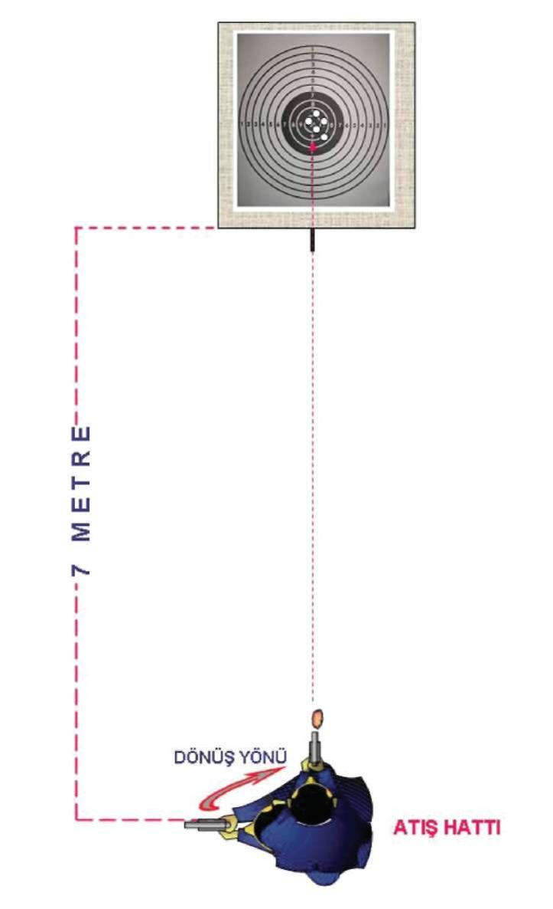
BÖLÜM
İLERİ SEVİYE ATIŞ TEKNİKLERİ
Şekil --4.b) Dururken Sağa Doğru Atış İstasyonu (Yarı Otomatik Tabanca) 53
Şekil-4.c) Dururken Sola Doğru Atış İstasyonu (Yarı Otomatik Tabanca) 54

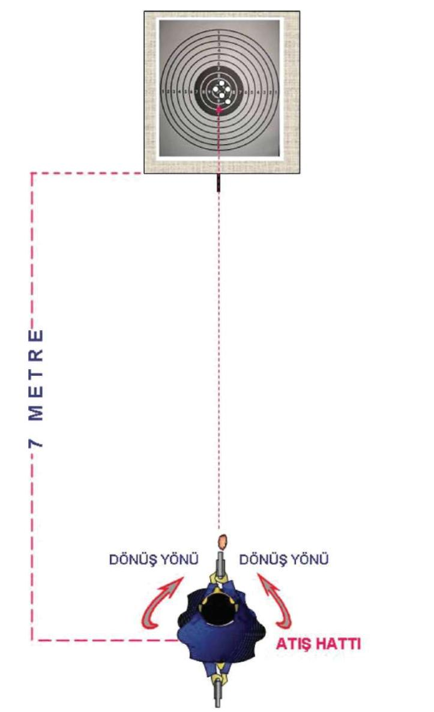
BÖLÜM
İLERİ SEVİYE ATIŞ TEKNİKLERİ
Şekil-4.d) Dururken Geriye Doğru Atış İstasyonu (Yarı Otomatik Tabanca) 55
1.4. YARI OTOMATİK TABANCADA ŞARJÖR DEĞİŞTİRME
VE ÇÖKEREK-AYAKTA ATIŞ TEKNİĞİ
Şarjör değiştirmeden önce tabanca hedefle göz arasında, kol dirsekten bükülerek namlu yukarıyı göstermek şartıyla ters “ L” pozisyonu aldırılır. Tabancayı kavrayan elin başparmağıyla şarjör çıkarma mandalına basılırken, öteki elle şarjör çıkartılıp atılır. Ay n ı elle yedekte bulunan şarjör çıkartılıp tabancayı kavrayan elin serçe parmağının yardımıyla çıt sesi gelinceye kadar tabancaya takılır. Tabancanın üst kapak indirme mandalına basılarak tabanca aktif duruma getirilir.
Bu esnada gözler, tabancanın ters “L” olan kısmından hedefi sürekli izler.
Bu teknik sütre arkasında aynen uygulanabileceği gibi sütrenin olmadığı bir alanda hızlı şekilde hedef küçültülerek, bir veya iki adım sağa ve sola sıçrayarak, tabancanın kullanıldığı el tarafındaki ayağın topuğuna oturularak diğer ayağı öne kırıp çökme pozisyonunda uygulanmalıdır.
Uzun mesafe atışlarında, ayak tam kırılarak üzerine rahat bir oturma pozisyonu sağlanır. Şarjör değiştirme işlemi tamamlandıktan sonra, önde kırılan ayağın üstüne pasif kolun dirseği ile destek yapılarak atış yapılır. Bunlarla eş zamanlı göğüs ve baş hedefe dik tutularak pozisyon alınır. (Bakınız Resim-6.a, 6.b, 6.c, 6.d) 1. Hareket
2. Hareket
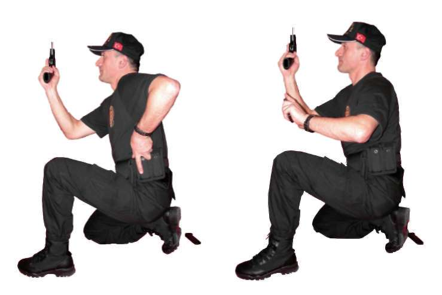
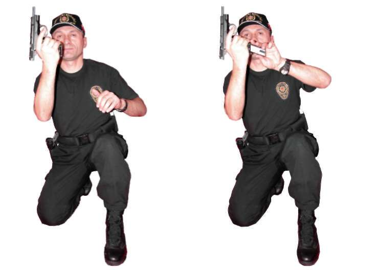
BÖLÜM
İLERİ SEVİYE ATIŞ TEKNİKLERİ
3. Hareket 4. Hareket
Resim-6.a) Şarjör Değiştirme ve Çökerek Atış Teknikleri (Yarı Otomatik Tabanca) 5. Hareket
6. Hareket
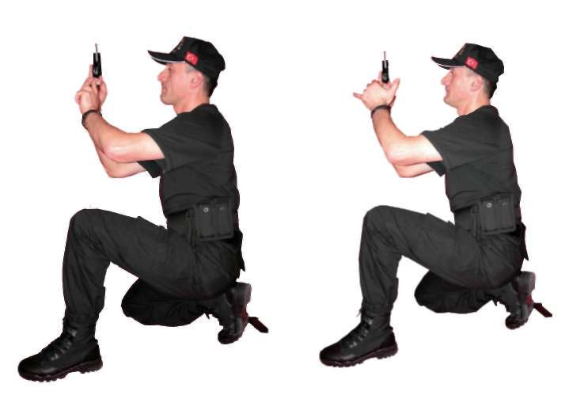

7. Hareket 8. Hareket
Resim-6.b) Şarjör Değiştirme ve Çökerek Atış Teknikleri (Yarı Otomatik Tabanca) 9. Hareket
10. Hareket
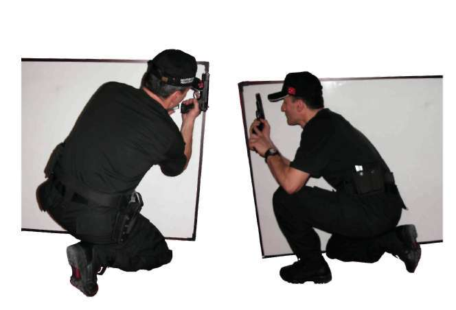
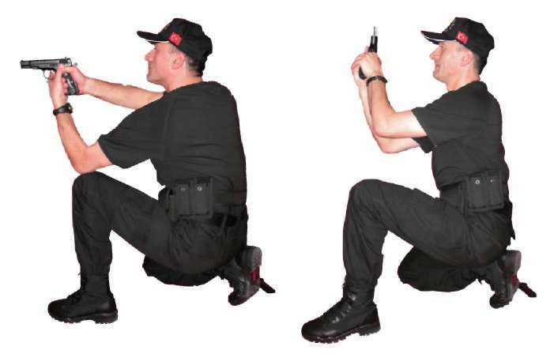
BÖLÜM
İLERİ SEVİYE ATIŞ TEKNİKLERİ
^
10.a) Hareket (Destekli) 10.b) Hareket (Rahat Oturuş) Resim-6.c) Şarjör Değiştirme ve Çökerek Atış Teknikleri (Yarı Otomatik Tabanca) Çökerek Sağdan Değiştirme
Çökerek Soldan Değiştirme
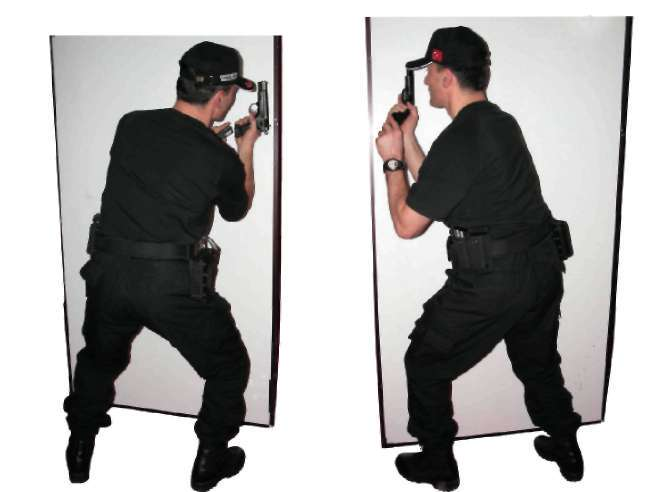
Ayakta Sağdan Değiştirme Ayakta Soldan Değiştirme Resim-6.d) Sütre Gerisinden Şarjör Değiştirme Teknikleri Soltan Ateş Etme
Sağdan Ateş Etme
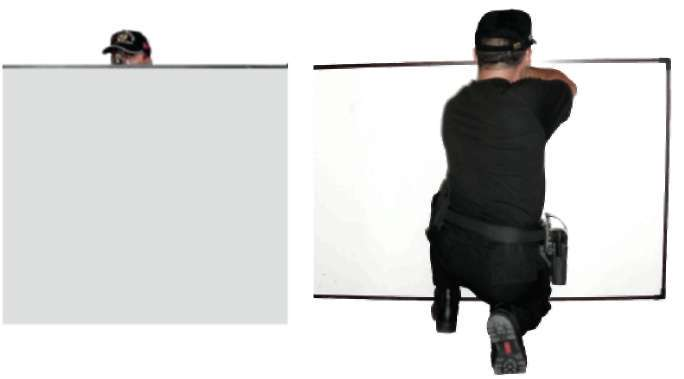
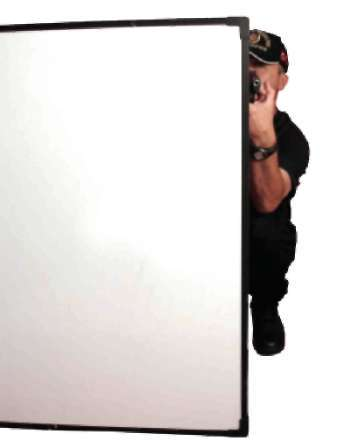
BÖLÜM
İLERİ SEVİYE ATIŞ TEKNİKLERİ
Ateş Etme (Önden Görünüm)
Üstten Ateş Etme (Ön Görünüm) Üstten Ateş Etme (Arkadan Görünüm) Resim-6.e) Sütre Gerisinden Oturarak Atış Teknikleri 6 1

Sağdan Ateş Etme
Ateş Etme (Ön Görünüm)
Resim-6.f) Sütre Gerisinden Ayakta Atış Teknikleri 62


BÖLÜM
İLERİ SEVİYE ATIŞ TEKNİKLERİ
Tekniği Uygulamalı Olarak Çalışma Şekli
^ Emniyet tedbirlerini okuyun. Atış poligonuyla ilgili gerekli önlemleri alın.
^ Vücudunuzu basit ısınma teknikleri ile ısındırarak çalışmaya hazırlayın.
Tabanca ve şarjörleri kontrol edip koruyucu malzemeleri giyin ve giydirin.
^ Tekniklerin hepsini, atışlı çalışmadan önce yetirince kuru çalışın.
^ Bu teknikleri, poligonun büyüklüğüne göre yerleştireceğiniz daireli hedef sayısı kadar personelle aynı anda çalışabilirsiniz.
^ Hedefe 7 metre mesafede her iki şarjöre de ikişer fişek doldurun. İlk şarjörü kılıftaki tabancaya takın, yedek şarjörünüzü rahat alabileceğiniz şekilde kılıfına koyun.
^ Verilen atış komutuyla tabancanızı kılıftan çekerek şarjörünüzde bulunan iki fişeği atın. Bu esnada silahın kapak takımı geri kalır. Bu durum, tabancanızda fişeğinizin bittiğini ve şarjör değiştirmeniz gerektiğinin göstergesidir. Bu pozisyonu algılayıp bilinçaltına yerleştirmeniz gerekir.
^ Tabancada fişeğin bittiğini anlar anlamaz en hızlı şekilde çökerek şarjör değiştirin. Otomatik doldurma mandalına basarak çökme pozisyonundayken kalan iki fişeğinizi atın.
^ Bu tekniği mühimmatınızın durumuna göre tekrar edin. Ayrıca mesafeyi 15 metreye çıkararak rahat çökme pozisyonunda ve yine 7 metre mesafeden herhangi bir sütrenin gerisinden ayakta şarjör değiştirerek tekniği uygulayın. Bu tekniğin tamamının ortalama 6-7 saniyede tamamlanması, vuruşlarında hedefin siyah kısmında yoğunlaşması, atıcının başarılı olduğunun göstergesidir.
^ Tamamlanan her çalışmadan sonra atış yapan tüm personele şarjörleri çıkarttırın. Silahların fişek yatağını gözle ve elle kontrol ettirip güvenli bir bölgede tetik düşürttürdükten sonra şarjörler ve silahları kılıflarına taktırın. (Bakınız Şekil-5)
Bu tekniklerle,
^ Yarı otomatik tabancada fişeğin bitmesi durumunda şarjörün bir veya iki saniyede değiştirilmesi,
^ Yarı otomatik tabancanın arıza yapması durumunda şarjörün çıkartılarak arızanın giderilmesi,
^ Hedef küçültülerek çökme pozisyonunda şarjör değiştirilmesi veya sütrelerden faydalanılarak ayakta şarjör değiştirilmesi gibi amaçla-rın bütününün bilinç altında reflekse dönüşmesi sağlanır 63

Şekil-5) Yarı Otomatik Tabancada Şarjör Değiştirme ve Çökerek Atış İstasyonu 1.5. YARI OTOMATİK TABANCA İLE YÜRÜRKEN DURUP DEĞİŞİK
YÖNLERDEN ÇIKAN HEDEFLERE DOĞRU ATIŞ TEKNİKLERİ
1.5.1. Yürürken Önden Çıkan Hedeflere Doğru Durarak Atış Tekniği Ani bir duruşla eş zamanlı olarak hızlı atış pozisyonuna geçilir, eğer tabanca elinizde ise hedefe doğru atış yapılır. Tabanca kılıfında ve fişek yatağı boş
ise çekip kurarak, fişek yatağı dolu ise direk hedefimize yönelterek atış yapılır ve yürümeye devam edilir. (Bakınız Resim-7.a) 64

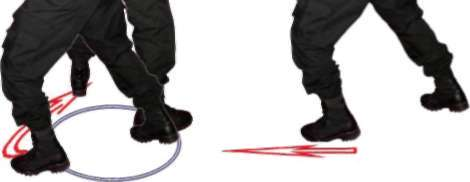
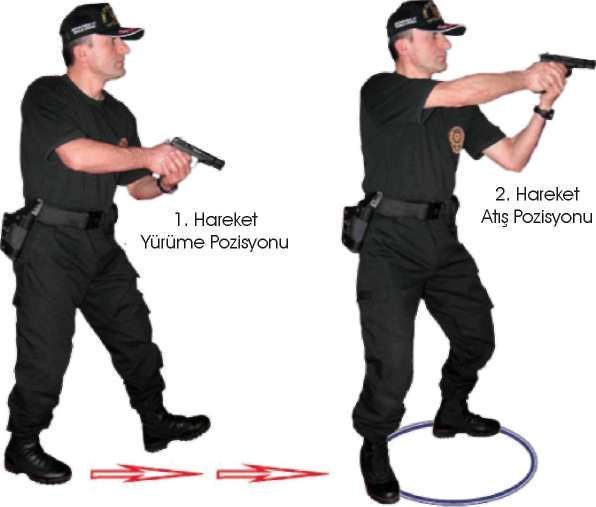
BÖLÜM
İLERİ SEVİYE ATIŞ TEKNİKLERİ
Resim-7.a) Yürürken Önden Çıkan Hedeflere Doğru Durarak Atış Tekniği 1.5.2. Yürürken Sağdan Çıkan Hedeflere Doğru Durarak Atış Tekniği Ani bir duruşla eş zamanlı olarak sağa dönüş tekniği uygulanır. Eğer tabanca elinizde ise hedefe doğru atış yapılır. Tabanca kılıfında ve fişek yatağı boş
ise çekip kurarak fişek yatağı dolu ise direk hedefimize yönelterek atış yapılır ve yürümeye devam edilir. (Bakınız Resim-7.b) Yürüme Pozisyonu
2. Hareket
Atış Pozisyonu
Resim-7.b) Yürürken Sağdan Çıkan Hedeflere Doğru Durarak Atış Tekniği 65
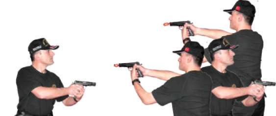
1.5.3. Yürürken Soldan Çıkan Hedeflere Doğru Durarak Atış Tekniği Ani bir duruşla eş zamanlı olarak sola dönüş tekniği uygulanır. Eğer tabanca elinizde ise hedefe doğru atış yapılır. Tabanca kılıfında ve fişek yatağı boş
ise çekip kurarak fişek yatağı dolu ise direk hedefimize yönelterek atış yapılır ve yürümeye devam edilir. (Bakınız Resim-7.c) 1. Hareket
Yürüme Pozisyonu
2. Hareket
Atış Pozisyonu
Resim-7.c) Yürürken Soldan Çıkan Hedeflere Doğru Durarak Atış Tekniği 1.5.4. Yürürken Geriden Çıkan Hedeflere Doğru Durarak Atış Tekniği Ani bir duruşla eş zamanlı olarak geri dönüş tekniği uygulanır. Eğer tabanca elinizde ise hedefe doğru atış yapılır. Tabanca kılıfında ve fişek yatağı boş
ise çekip kurarak fişek yatağı dolu ise direk hedefimize yönelterek atış yapılır ve yürümeye devam edilir. (Bakınız Resim-7.d) Soldan
Geriye
Dönüş
Resim-7.d) Yürürken Geriden Çıkan Hedeflere Doğru Durarak Atış Tekniği 66

BÖLÜM
İLERİ SEVİYE ATIŞ TEKNİKLERİ
Tekniği Uygulamalı Olarak Çalışma Şekli
^ Emniyet tedbirlerini okuyun. Atış poligonuyla ilgili gerekli önlemleri alın.
^ Vücudunuzu basit ısınma teknikleri ile ısındırın ve çalışmaya hazırlayın.
Silah ve şarjörleri kontrol edip koruyucu malzemeleri giyin ve giydirin.
^ Tekniklerin hepsini atışlı çalıştırmadan önce yetirince kuru çalışma yaptırın.
^ Boy hedeflerinizi poligonunuzun büyüklüğüne göre yakından uzağa doğru, aralarında yürünecek şekilde, çapraz ve düz olacak biçimde yerleştirin. Bu istasyonda personel tek tek çalıştırılır.
^ Her iki şarjörünüzü tam kapasite doldurun. İlk şarjörü kılıftaki tabancaya takın. Yedek şarjörünüzü rahat çıkarabileceğiniz şekilde kılıfına koyun. Yakından uzağa doğru hedeflere yürürken, verilen ilk atış komutuyla tabancanızı kılıftan çekerek size yakın olan hedefe doğru durarak atış yapın. Tabancanızı göğsünüze doğru hafif toplayıp yürümenize devam edin. Verilen her atış komutunda tekniği tekrar uygulayın.
^ Atışlarınızı hedeflere yaklaşık 5-7 metre mesafelerden yapın. Ayrıca tabancanızda fişeğin bitmesi veya tutukluk yapması durumunda şarjör değiştirme ve tutukluk giderme tekniğini uygulayarak, atışlarınıza devam edin.
^ Boy hedeflerini yürüme yolunuza paralel 5-7 metre mesafe oluşturacak şekilde yerleştirin. Her iki şarjörünüzü tam kapasite doldurun. İlk şarjörü kılıftaki tabancaya takın. Yedek şarjörünüzü rahat alabileceğiniz şekilde kılıfına koyun. Hedeflerinizi sağ tarafınıza alarak yürümeye başlayın. Verilen ilk atış komutunda size yakın olan ilk hedefin karşısında durup, sağa dönüş tekniğini uygulayarak eş zamanlı olarak tabancanızı da kılıfından çekerek atış yapın. Tabancayı hafif göğsünüze doğru toplayıp yürümenize devam edin. Verilen her atış komutunda aynı tekniği tekrarlayın.
^ Yürüme yönünüzü değiştirerek, hedeflerinizi sol tarafınıza alarak aynı atışları bu yöne doğruda da yapın.
^ Her iki şarjörünüzü tam kapasite doldurun. İlk şarjörü kılıftaki tabancaya takın. Yedek şarjörünüzü rahat çıkarabileceğiniz şekilde kılıfına koyun. Bir boy hedefine 1 metre mesafeden sırtınızı dönüp hedeften yürüyerek uzaklaşın verilen ilk atış komutuyla durarak ve geriye dönüş
tekniğini uygulayarak tabancanızla atış yapın. Tekrar hedefe sırtınızı dönüp silahınızı da göğsünüze hafif toplayıp yürümenizi 10-15 metre mesafeye kadar sürdürün ve verilen her atış komutlarıyla tekniği uygulamaya devam edin.
^ Atışların boy hedefinin göğüs bölgesinde toplanması başarı kabul edilir.
^ Mühimmatın durumuna göre teknikleri tekrar edin.
^ Tamamlanan her çalışmadan sonra atış yapan tüm personele şarjörleri çıkarttırın. Silahların fişek yatağını gözle ve elle kontrol ettirip güvenli bir bölgede tetik düşürttürdükten sonra şarjörler ve silahları kılıflarına taktırın. (Bakınız Şekil-6.a, 6.b, 6.c, 6.d)
Bu tekniği uygulamanın amacı,
^ Yürürken değişik yönlerden çıkan ani hedeflere yönelme,
^ Hedefe ve hedefin yönüne yoğunlaşma,
^ Ani duraklayıp atış yapabilme gibi durumları refleks hâline getirmektir Şekil-6.a) Yürürken Önden Çıkan Hedeflere Doğru Durarak Atış İstasyonu 68

BÖLÜM
İLERİ SEVİYE ATIŞ TEKNİKLERİ
Şekil-6.b) Yürürken Sağdan Çıkan Hedeflere Doğru Durarak Atış İstasyonu Şekil-6.c) Y ürürken Soldan Çıkan Hedeflere Doğru Durarak Atış İstasyonu 69

Şekil-6.d) Yürürken Geriden Çıkan Hedeflere Doğru Durarak Atış İstasyonu 1.6. YARI OTOMATİK TABANCA İLE KOŞARKEN DURUP DEĞİŞİK
YÖNLERDEN ÇIKAN HEDEFLERE DOĞRU ATIŞ TEKNİKLERİ
1.6.1. Koşarken Önden Çıkan Hedeflere Doğru Durarak Atış Tekniği Koşarken ön taraftan çıkan hedeflere karşı önce duruşunuzu step yaparak tamamlayın. Eş zamanlı olarak hızlı atış pozisyonuna geçerek, tabanca elinizde ise direkt hedefe doğrultup atış yapın. Tabanca kılıfında ve fişek yatağı boş ise çekip kurarak, fişek yatağı dolu ise direk hedefe yönelterek atış yapın.
(Bakınız Resim-8.a)


BÖLÜM
İLERİ SEVİYE ATIŞ TEKNİKLERİ
3. Hareket
1. Hareket
Atış Pozisyonu
Koşu Pozisyonu
Resim-8.a) Koşarken Önden Çıkan Hedeflere Doğru Durarak Atış Tekniği (Yarı Otomatik Tabanca)
1.6.2. Koşarken Sağdan Çıkan Hedeflere Doğru Durarak Atış Tekniği Koşarken sağ taraftan çıkan hedeflere karşı önce duruşunuzu step yaparak tamamlayın. Eş zamanlı olarak sağa dönüş tekniğini uygulayıp hızlı atış
pozisyonuna geçerek, tabanca elinizde ise direkt hedefe doğrultup atış yapın.
Tabanca kılıfında ve fişek yatağı boş ise çekip kurarak, fişek yatağı dolu ise direk hedefe yönelterek atış yapın. (Bakınız Resim-8.b) 1. Hareket
Koşu Pozisyonu
2. Hareket
Step
3. Hareket
Atış Pozisyonu
Resim-8.b) Koşarken Sağdan Çıkan Hedeflere Doğru Durarak Atış Tekniği (Yarı Otomatik Tabanca)
1.6.3. Koşarken Soldan Çıkan Hedeflere Doğru Durarak Atış Tekniği Koşarken sol taraftan çıkan hedeflere karşı önce duruşunuzu step yaparak tamamlayın. Eş zamanlı olarak sola dönüş tekniğini uygulayıp hızlı atış
pozisyonuna geçerek, tabanca elinizde ise direkt hedefe doğrultup atış yapın.
Tabanca kılıfında ve fişek yatağı boş ise çekip kurarak, fişek yatağı dolu ise direk hedefe yönelterek atış yapın. (Bakınız Resim-8.c) 3. Hareket
Atış Pozisyonu
1. Hareket
Koşu Pozisyonu
2. Hareket
Step
Resim-8.c) Koşarken Soldan Çıkan Hedeflere Doğru Durarak Atış Tekniği (Yarı Otomatik Tabanca)
Dikkat edilmesi gereken husus, koşarken silahınızın hareket alanı, tabancanın namlusu hedefin yönünde, kolun doğal ileri geri hareketiyle birlikte olmalıdır.
1.6.4. Koşarken Geriden Çıkan Hedeflere Doğru Durarak Atış Tekniği Koşarken geriden çıkan hedeflere karşı önce duruşunuzu step yaparak tamamlayın. Eş zamanlı olarak geriye dönüş tekniğini uygulayıp hızlı atış pozisyonuna geçerek, tabanca elinizde ise direkt hedefe doğrultup atış yapın.
Tabanca kılıfında ve fişek yatağı boş ise çekip kurarak, fişek yatağı dolu ise direk hedefe yönelterek atış yapın. (Bakınız Resim-8.d) 72
BÖLÜM
İLERİ SEVİYE ATIŞ TEKNİKLERİ
Soldan
Geri
Dönüş
Resim-8.d) Koşarken Geriden Çıkan Hedeflere Doğru Durarak Atış Tekniği (Yarı Otomatik Tabanca)
Tekniği Uygulamalı Olarak Çalışma Şekli
^ Emniyet tedbirlerini okuyun. Atış poligonuyla ilgili gerekli önlemleri alın.
^ Vücudunuzu basit ısınma teknikleri ile ısındırılarak çalışmaya hazırlayın.
Tabanca ve şarjörleri kontrol edip koruyucu malzemeleri giyin ve giydirin.
^ Tekniklerin hepsini, atışlı çalışmadan önce yeterince kuru çalışın.
^ Bu istasyon çalışması aynı anda en fazla 2 veya 3 kişiyle yapılır. Kişi sayısına göre boy hedefi takılarak yaklaşık 30 metre mesafeden uzaktan yakın mesafeye doğru hedeflere koşarak uygulanır.
^ Şarjörünüzü tam kapasite doldurun. Elinizdeki tabancaya şarjörü takarak normal dolduruş yapın ve “Koş!” komutunu bekleyin. “Koş!” komutuyla hedefe doğru koşarken 20-15-10-5 metre mesafelerde verilecek atış komutlarıyla step yaparak durup atış yapın sonra tekrar koşmaya devam edin.
^ Aynı teknikle tek kişi olarak hedefe sırtınızı dönün. Hedefe 2 metre mesafeden koşarak uzaklaşın. Yaklaşık 5-10-15-20 metre mesafelerden verilecek atış komutlarıyla step yapıp durun ve geri dönüş tekniğini uygulayıp hedefe atış yapın. Sonra geriye dönüp koşmaya devam edin.
^ Boy hedeflerini koşu yolunuza 5-7 metre mesafede paralel şekilde yerleştirin. Hedefleri sağ paralelinize alarak şarjörü tam kapasite doldurup elinizdeki tabancaya takarak normal doldurun ve koş komutunu bekleyin. Verilen koş komutuyla hedeflerinize paralel koşarken verilen her atış komutuyla step yapıp durun ve eş zamanlı olarak sağa dönüş
tekniğini uygulayıp hedefinize atış yapın. Tekrar koştuğunuz yöne doğru koşmaya devam edin.
^ Aynı tekniği hedeflere ters yönden koşarak soldaki hedeflere doğru uygulayın.
^ Atışların boy hedefinin göğüs bölgesinde toplanması başarı kabul edilir.
^ Mühimmatın durumuna göre teknikleri tekrar edin.
^ Tamamlanan her çalışmadan sonra atış yapan tüm personele şarjörleri çıkarttırın. Silahların fişek yatağını gözle ve elle kontrol ettirip güvenli bir bölgede tetik düşürttürdükten sonra şarjörler ve silahları kılıflarına taktırın. (Bakınız Şekil-7.a, 7.b, 7.c, 7.d) NOT
Koşarak atış tekniği, tabanca, normal doldurulup elde tutularak uygulanabbileceği gibi tabanca kılıfta fişek yatağı boş veya dolu olarak da uygulanabilir. Bu durumda daha önce anlatılan tabancayı kurma tekniği veya direkt atış teknniği uygulanır.
Bu teknik,
^ Koşu hâlindeyken çıkan ani hedeflere yönelik nasıl durup atş yapılacağını,
^ Operasyon esnasında yer değiştirmelerin daha seri olarak yapılmasını,
^ Savunulması zor alanlardan hızlı şekilde çıkılmasını,
^ Efor sarf ederken veya kalp atışlarının ve stresin yüksek olduğu durumlarda tabancayı kullanmasını,
^ Birbirini takip eden seri operasyonlarda personele kondisyon sağlar 74


BÖLÜM
İLERİ SEVİYE ATIŞ TEKNİKLERİ
Şekil-7.a) Koşarken Önden Çıkan Hedeflere Doğru Durarak Atış İstasyonu 75
Şekil-7.b) Koşarken Sağdan Çıkan Hedeflere Doğru Durarak Atış İstasyonu Şekil-7.c) Koşarken Soldan Çıkan Hedeflere Step yapıp Durarak Atış istasyonu 76


BÖLÜM
İLERİ SEVİYE ATIŞ TEKNİKLERİ
Şekil-7.d) Koşarken Geriden Çıkan Hedeflere Step yapıp Dönerek Atış istasyonu 1.7. YARI OTOMATİK TABANCA İLE HAREKET HÂLİNDEYKEN
FARKLI AÇILARDAN ÇIKAN HEDEFLERE DOĞRU ATIŞ TEKNİKLERİ
Tekniğe önce yürüme tekniklerini öğreterek başlayın.
1.7.1. İleriye Doğru Yürüme Tekniği
Yürürken atış yapıldığında tabancada sallanma olacaktır. Bu sallanmayı en aza indirebilmek için yürüyüş ayak topuğundan, ayakucuna doğru yapılmalıdır Bacaklar hafif kırık, göğüs ve baş az öne alınmış olmalıdır. Bu durum ringdeki boksörün duruşuna benzer.
1.7.2. Geriye Doğru Yürüme Tekniği
Bu teknik ileriye doğru yürüme tekniğinin tam tersidir. Geriye doğru yürüme ayakuçlarından ayak topuğuna doğru olmalıdır. Diğer vücut pozisyonu aynıdır.
1.7.3. Yürürken Şarjör Değiştirme Tekniği
Yürürken şarjör, tabanca hedeften başka yöne doğru çevrilerek değiştirile-mez. Tabancayı kavrama pozisyonu bozulmadan aynı elin başparmağı şarjör değiştirme mandalına yetişmeyeceğinden dolayı diğer elle mandala basılır şarjör çıkartılır. Ç ıkan şarjör yere bırakılarak yedekteki şarjör çıt sesi gelinceye kadar tabancaya itilir. (Bakınız Resim-9)
Y ürüme hızı hedefin vurulabileceği bir hızda olmalıdır.
3. Hareket 4. Hareket
Resim-9) Yürürken Şarjör Değiştirme Tekniği 1.7.4. İleri Yürürken Öndeki Hedeflere Doğru Hareket Hâlinde Atış
Tekniği
Atıcı önce tabancayı normal doldurup ileriye doğru yürüme pozisyonu alır.
Çift elle kavranan tabanca hedefe doğru nişan hattının altında, kollar hafif kırık 78
BÖLÜM
İLERİ SEVİYE ATIŞ TEKNİKLERİ
pozisyonda tutulur. Her atış komutunda tabanca yukarı kaldırılıp atış yapıldıktan sonra tekrar eski pozisyona geçilir. Yürürken veya yürüme esnasında atış yapılırken gözler sürekli hedefi gözlemelidir. Ayrıca yürüme hızı hedefin vurulabileceği bir hızda olmalıdır. Bununla beraber atış hızı yakın mesafelerdeki hedeflere hızlı, uzak mesafelerdeki hedeflere ise yavaş olmalıdır. (Bakınız Resim-10.a) 1. Hareket 2. Hareket
Resim-10.a) İleri Yürürken Öndeki Hedeflere Doğru Hareket Hâlinde Atış Tekniği 1.7.5. Geriye Doğru Yürürken Öndeki Hedeflere Doğru Hareket Hâlinde Atış Tekniği
İleriye doğru yürüme tamamlandıktan sonra verilen geriye doğru yürüme komutuyla, atış pozisyonu bozulmadan geriye doğru yürüme tekniğine geçilir.
Bu durumdayken yürüme ve atış hızı ayarlanarak hedeflere doğru atış yapılır.
(Bakınız Resim-10.b)
1. Hareket 2. Hareket
Resim-10.b) Geriye Doğru Yürürken Öndeki Hedeflere Doğru Hareket Hâlinde Atış Tekniği 79
1.7.6. Hedeflere Paralel Yürürken Sağ ve Sol Yönden Çıkan Hedeflere Hareket Hâlinde Atış Teknikleri
Önce tabancanızı normal olarak doldurup hedefleri sağ paralelinize alarak ileriye doğru yürüme tekniğine geçin. Dikkatinizi hedeflere toplayın. Başka hedeflerin çıkması muhtemel alanları da kontrolünüzde bulundurun. Verilen her atış komutunda el ve kol pozisyonlarınızı bozmadan, vücudunuzun bel kısmından dönerek sağ yönünüzde bulunan size en yakın veya tehlike arz eden hedeflere atış yapın. Tekrar öne yürüme pozisyonuna geçerek öne doğru yürümeye devam edin. Tekrarlanan her atış komutunda bu atış tekniğini tekrarlayın. Ayrıca ters yönden yürüyerek hedeflerinizi sol paralelinize alın ve aynı atış tekniğini sol yöndeki hedeflere doğru yapın. Bu teknikte yürüme hızı, hedeflere isabet ettireceğiniz bir hız olmalıdır. (Bakınız Resim-10.c) Sağ Yöne
Sol Yöne
Atış
Atış
Resim-10.c) Hedeflere Paralel Yürürken Sağ ve Sol Yönden Çıkan Hedeflere Hareket Hâlinde Atış Teknikleri
1.7.7. Hedeflere Çapraz Yürürken Sağ ve Sol Yönden Çıkan Hedeflere Hareket Hâlinde Atış Teknikleri
Hedeflere teğet yürürken uzak mesafeden yakın mesafeye doğru oluşturduğunuz teğet üzerinde tabancanızı normal doldurun. İleriye doğru yürüme tekniğine geçerek hedeflerinizi sağ yöne alın. Hedeflere teğet yürürken. Dikka-80

BÖLÜM
İLERİ SEVİYE ATIŞ TEKNİKLERİ
tinizi hedeflere toplayın, başka hedeflerin çıkması muhtemel alanları da kontrolünüzde bulundurun. Verilen her atış komutunda el ve kol pozisyonlarınızı bozmadan, vücudunuzun bel kısmından dönerek sağ yönünüzde bulunan size en yakın veya tehlike arz eden hedeflere atış yaparak tekrar yürümenize devam edin. Her tekrarlanan atış komutunda bu atış tekniğini tekrarlayın. Ayrıca ters yönden yürüyerek hedeflerinizi sol paralelinize alın ve aynı atış tekniğini sol yöndeki hedeflere doğru yapın. Bu teknik ile hedeflere, uzak mesafeden yakın mesafeye doğru atış yapılmaktadır. Bundan dolayı yürüyüş hızınıza orantılı olarak hedeflere uzak mesafelerden atış hızını düşürerek, yakın mesafelerden de atış hızını artırarak atış yapmalısınız. (Bakınız Resim-10.d) V \
Belden
Dönüş
Sağ Yöne
Atış
Sol Yöne
Atış
Resim-10.d) Hedeflere Çapraz Yürürken Sağ ve Soldan Çıkan Hedeflere Hareket Hâlinde Atış Teknikleri
Tekniği Uygulamalı Olarak Çalışma Şekli
^ Emniyet tedbirlerini okuyun. Atış poligonuyla ilgili gerekli önlemleri alın.
^ Vücudunuzu basit ısınma teknikleri ile ısındırın ve çalışmaya hazırlayın.
Tabanca ve şarjörleri kontrol edip koruyucu malzemeleri giyin ve giydirin.
^ Tekniklerin hepsinde atışlı çalışmadan önce yetirince kuru çalışın.
^ Bu teknikleri poligonun büyüklüğüne göre yerleştireceğiniz boy hedef sayısı kadar personelle aynı anda çalışabilirsiniz.
^ Bu tekniği uygulamak için boy hedefine yaklaşık 30 metre mesafede iki şarjörünüzü de tam kapasite doldurun. İlk şarjörünüzü kılıfına, ikinci şarjörünüzü elinizdeki tabancanıza takıp normal dolduruş yaparak ileriye doğru yürüme komutu bekleyin.
^ İleri yürü komutuyla yürümeye başlayın ve yaklaşık 20-15-10-5-1 metre mesafelerden verilen atış komutlarıyla duraklamadan elinizdeki tabancayı gözünüzle hedef arasına doğrultarak atış yapın. Aynı tekniği hedeflerden geriye doğru yürüyerek ve yürüme esnasında şarjörü değiştirerek de uygulayın.
^ Bu ve bundan sonraki çalışacağınız teknikleri istasyonda teker teker çalışın.
^ Çift şarjörünüzü tam kapasite ile doldurun, ilk şarjörünüzü kılıfına ikinci şarjörünüzü elinizdeki tabancaya takıp normal dolduruş yapın. Aynı hedeflere yaklaşık 7 metre mesafede bekleyerek yürüme yolunuzun sağ
paraleline alın ve yürüme komutunu bekleyin.
^ Yürüme komutuyla hedeflere paralel yürürken verilen her atış komutuyla belinizden dönerek en yakın hedefe atış yapın ve tekrar yürüme yolunuza devam edin. Her atış komutunda aynı tekniği uygulayarak atı
şa devam edin. Bu arada tabancanızda fişek bitmişse şarjörünüzü de değiştirin. Daha sonra hedeflere ters yönden yürüyün ve sol paralelinizdeki hedeflere de aynı tekniği uygulayarak atış yapın.
^ Aynı hedeflere yaklaşık 30 metre mesafeden 5 metre mesafeye kadar bir teğet oluşturarak hedefleri sağ yönünüze alın ve yürüme yolunuzu belirleyin. Her iki şarjörünüzü de tam kapasite doldurun. İlk şarjörünüzü kılıfına, ikincisini tabancanıza takıp normal dolduruş yaparak yürüme istikametinizde bulunan 30 metre mesafedeki ilk hedefin karşısında komut bekleyin.
^ Verilen yürü komutuyla oluşturduğunuz teğet yol üzerinde yürürken verilen atış komutuyla belinizden hedefe dönerek en yakın hedefe atış
yapın ve tekrar yürüme istikametinize dönerek yürümenize devam edin.
Verilen her atış komutunda aynı tekniği tekrarlayın. Ayrıca tabancanızda fişek bittiği an yürümenizi durdurmadan şarjör değiştirerek atış yapın.
^ Aynı atış tekniğini, teğet yürüme yolunuzu ters yönden oluşturarak sol yönünüzdeki hedeflere aynı tekniği uygulayın ve atış yapın.


BÖLÜM
İLERİ SEVİYE ATIŞ TEKNİKLERİ
^ Bu atış tekniğinde atıcının uzaktan atış yaptığı hedeflere isabet ettirmesi, yakın hedeflerde ise isabetlerin göğüs kısmında toplanması başarı kabul edilir.
^ Mühimmatın durumuna göre teknikleri tekrar edin.
^ Tamamlanan her çalışmadan sonra atış yapan tüm personele şarjörleri çıkarttırın. Silahların fişek yatağını gözle ve elle kontrol ettirip güvenli bir bölgede tetik düşürttürdükten sonra şarjörler ve silahları kılıflarına taktırın. (Bakınız Şekil-8.a, 8.b, 8.c, 8.d, 8.e) NOT
İleri ve geri yürürken atış yapacak personelin aynı hizada yürümeleri ve birbirlerini kontrol etmeleri gerekmektedir.
^ Hareket hâlinde hedefe atış yapılmasını,
^ Hedefe yaklaşırken hedefin baskı altında tutulmasını veya etkisiz hâle getirilmesini,
^ Hedeften geri çekilirken hedefin baskı altında tutulmasını veya etkisiz hâle getirilmesini sağlar
^ Özellikle sıcak temas hâlindeki kişinin hareket hâlinde isabet alma ihtimali, sabit hâldekinden daha düşük olduğundan, sağa sola, paralel veya teğet (çapraz) yönlere hareket ederek, hedefleri etkisiz hâle getirmeyi, ayrıca bu tekniğin geniş alanları daraltarak, kontrolü sağlamada etkili olmaktadır

Şekil-8.a) İleri-Geri Yürürken Önden Çıkan Hedeflere Hareket Hâlinde Atış İstasyonu 84


BÖLÜM
İLERİ SEVİYE ATIŞ TEKNİKLERİ
Şekil-8.b) Hedeflere Paralel Yürürken Sağdan Çıkan Hedeflere Hareket Hâlinde Atış İstasyonu Şekil-8.c) Hedeflere Paralel Yürürken Soldan Çıkan Hedeflere Hareket Hâlinde Atış İstasyonu 85

Şekil-8.d) Hedeflere Çapraz Yürürken Sağdan Çıkan Hedeflere Hareket Hâlinde Atış İstasyonu Şekil-8.e) Hedeflere Çapraz Yürürken Soldan Çıkan Hedeflere Hareket Hâlinde Atış İstasyonu 86
BÖLÜM
İLERİ SEVİYE ATIŞ TEKNİKLERİ
1.8. SİVİL KIYAFETLERDEN YARI OTOMATİK TABANCAYI ÇEKME
VE KURARAK AKTİF HÂLE GETİRME TEKNİKLERİ
1.8.1. Palto vb. Kıyafetler
Palto ve benzeri kıyafetleri giyerek tabancanızı taşıyorsanız ve kullanma ihtimaliniz de varsa paltonuzun önünü açık bulundurmanız gerekmektedir.
Tabancayı kılıf veya kılıfsız olarak belinizden alırken, hangi tarafta taşıdığınız ve hangi elinizle alacağınız önemlidir. Tabancayı kullandığınız el tarafında taşıyorsanız, aynı elinizle silahı örten paltonun tarafına hızlı vurarak geriye doğru atın. Eşzamanlı olarak aynı elinizle tabancayı çekip kurma tekniğini uygulayarak aktif hâle getirin. Tabancayı kullandığınız el ile tabancayı bulundurduğunuz yer farklı tarafta ise tabancayı pasif olarak kullandığınız elinizle tabancayı örten paltonun tarafına geriye doğru hızlı vurarak ve diğer elinizle tabancayı çekip kurma tekniğini uygulayarak aktif duruma getirin. (Bakınız Resim-11.a) 1. Hareket
2. Hareket
3. Hareket 4. Hareket
Resim-11.a) Palto vb. kıyafetlerden Yarı Otomatik Tabancayı Çekme Tekniği 87
1.8.2. Kazak, Tişört, Gömlek vb. Kıyafetler Öncelikle bu kıyafetlerle tabancanın saklanması veya örtünülmesi hâlinde tekniğin uygulanabileceği bilinmelidir. Bu durumda tabancayı aktif olarak kullandığınız el ile tabancayı bulundurduğunuz yer doğru orantılı ise tabancayı pasif kullandığınız elinizle kazak, gömlek veya tişörtünüzün tabancayı örten kısmından tutarak hızlı şekilde yukarıya koltuk altına doğru çekin. Diğer aktif elinizle tabancanızı çekip kurma tekniğini uygulayarak aktif hâle getirin. Tabancayı aktif olarak kullandığınız el ile tabancanın bulunduğu yer ters orantılı ise yine tabancayı pasif kullandığınız elinizle, tabancayı örten kıyafetin kısmından tutarak koltuk altına doğru çekin. Eşzamanlı olarak tabancayı aktif kullandığınız elinizle tabancayı çekip kurma tekniğini uygulayarak aktif duruma getirin. (Bakınız Resim-11.b, 11.c.1, 11.c.2, 11.c.3.) 1. Hareket
2. Hareket
Resim-11.b) Kazak vb. kıyafetlerden Yarı Otomatik Tabancayı Çekme Tekniği (Sağ Taraf) 88
BÖLÜM
İLERİ SEVİYE ATIŞ TEKNİKLERİ
1. Hareket
2. Hareket
3. Hareket
Resim-11.c.1) Kazak vb. kıyafetlerden Yarı Otomatik Tabancayı Çekme Tekniği (Sol Taraf) 89
1. Hareket
2. Hareket
3. Hareket
Resim-11.c.2) Tişört vb. kıyafetlerden yarı otomatik tabancayı çekme tekniği (Sağ Taraf) 90
BÖLÜM
İLERİ SEVİYE ATIŞ TEKNİKLERİ
1. Hareket
2. Hareket
3. Hareket
Resim-11.c.3) Gömlek vb. kıyafetlerden yarı otomatik tabanca çekme tekniği 9 1
1.8.3. Mont vb. Kıyafetler
Bu teknik iki şekilde uygulanabilir. Mont vb. kıyafetlerin önü açıksa palto vb. kıyafetlerdeki tekniğin aynısı uygulanır. E ğer önü kapalıysa kazak, gömlek, tişört vb. kıyafetlerdeki teknik uygulanır. (Bakınız Resim-11.d.1, 11.d.2.) 1. Hareket
2. Hareket
Resim-11.d.1) Mont vb. kıyafetlerden yarı otomatik tabancayı çekme tekniği (Önü açık) 92
BÖLÜM
İLERİ SEVİYE ATIŞ TEKNİKLERİ
1. Hareket
2. Hareket
3. Hareket